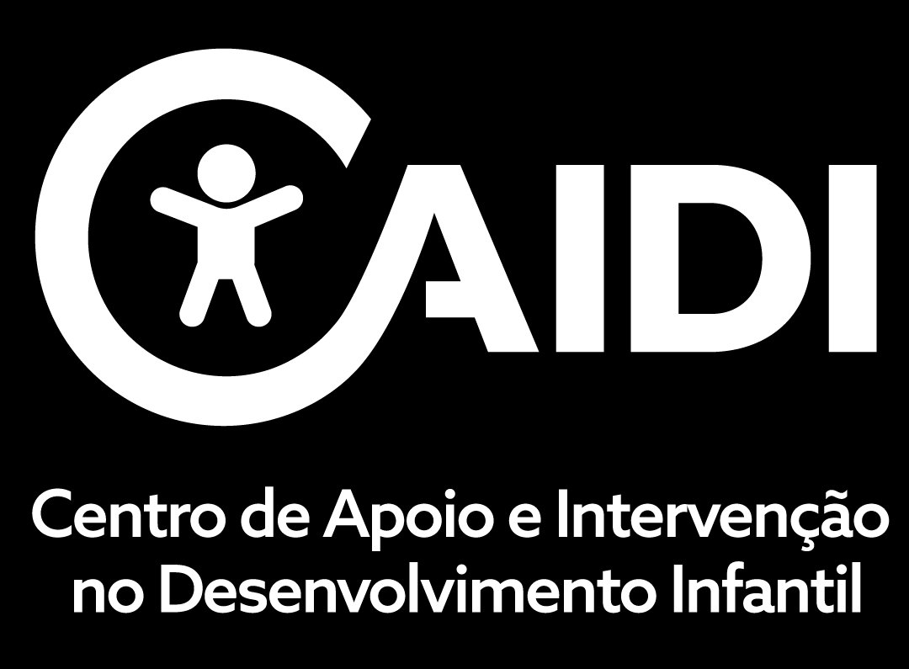

<!DOCTYPE html>
<html lang="pt">
<head>
  <meta charset="UTF-8" />
  <meta name="viewport" content="width=device-width, initial-scale=1.0, maximum-scale=1.0, user-scalable=no" />
  <title>Crianças no Mundo da Lua?</title>
  <meta name="description" content="Ferramenta de rastreio de dificuldades de atenção e linguagem em contexto escolar." />
  <meta name="author" content="Joana Miguel & Joana Carvalho — NIDCAIDI" />
  <link rel="icon" href="data:image/svg+xml,<svg xmlns=%22http://www.w3.org/2000/svg%22 viewBox=%220 0 100 100%22><text y=%22.9em%22 font-size=%2290%22>🌙</text></svg>" />
  <link href="https://fonts.googleapis.com/css2?family=DM+Sans:wght@400;500;600;700&display=swap" rel="stylesheet" />
  <style>
    :root {
      --bg: #FAFAF8;
      --surface: #FFFFFF;
      --surface2: #F5F4F0;
      --border: #E8E6E0;
      --text: #2D2B27;
      --text2: #5C5A54;
      --text3: #8E8B83;
      --teal: #2A7C6F;
      --teal-dark: #1F5F55;
      --teal-light: #F5FFF3;
      --coral: #D97757;
      --coral-light: #FFF6EB;
      --blue: #3B7DD8;
      --blue-light: #EBF4FB;
      --purple: #7C5CBF;
      --red: #D94F4F;
      --red-light: #FFF0F0;
      --green: #2D9B6E;
      --green-light: #F5FFF3;
      --amber: #D4940A;
      --amber-light: #FFF6EB;
      --radius: 14px;
      --shadow: 0 2px 8px rgba(0,0,0,0.04);
    }
    * { box-sizing: border-box; margin: 0; padding: 0; }
    body { font-family: 'DM Sans', -apple-system, sans-serif; background: var(--bg); color: var(--text); line-height: 1.6; font-size: 16px; -webkit-font-smoothing: antialiased; }
    #root { min-height: 100vh; }
    button { font-family: inherit; cursor: pointer; border: none; outline: none; }
    input, select, textarea { font-family: inherit; }
    ::selection { background: var(--teal-light); color: var(--teal-dark); }
  </style>
  <script crossorigin src="https://unpkg.com/react@18/umd/react.production.min.js"></script>
  <script crossorigin src="https://unpkg.com/react-dom@18/umd/react-dom.production.min.js"></script>
  <script src="https://unpkg.com/@babel/standalone/babel.min.js"></script>
</head>
<body>
<div id="root"></div>
<script type="text/babel">
const { useState, useMemo } = React;


// ═══════════════════════════════════════════════════════════════
// CRIANÇAS NO MUNDO DA LUA? — Rastreio Atenção e Linguagem
// Joana Miguel & Joana Carvalho · NIDCAIDI
// ═══════════════════════════════════════════════════════════════

// ─── CONFIGURAÇÃO ───────────────────────────────────────────
// Cole aqui o URL do Google Apps Script após deploy:
const API_URL = "https://script.google.com/macros/s/AKfycbxEw7bzcQ0ycMKGaiOApeEZMg1DEiF2w86E7gzB0PZaYEb3WmgKoqi74PYYY-o7NlUi/exec";
// Exemplo: "https://script.google.com/macros/s/AKfycbx.../exec"

async function sendToSheet(action, payload) {
  if (!API_URL) { console.warn("API_URL vazio"); return; }
  const body = JSON.stringify({ action, ...payload });
  console.log("A enviar:", action);

  // Método 1: fetch no-cors (funciona mas não dá feedback)
  try {
    await fetch(API_URL, {
      method: "POST",
      mode: "no-cors",
      headers: { "Content-Type": "text/plain;charset=utf-8" },
      body: body,
    });
    console.log("Enviado (no-cors, sem confirmação)");
  } catch (e1) {
    console.warn("fetch falhou, a tentar via beacon...", e1);
    // Método 2: sendBeacon como fallback
    try {
      navigator.sendBeacon(API_URL, new Blob([body], { type: "text/plain" }));
      console.log("Enviado via beacon");
    } catch (e2) {
      console.error("Ambos os métodos falharam:", e2);
    }
  }
}

// ─── DADOS ──────────────────────────────────────────────────

const SCREENING_ITEMS_DEFAULT = {
  inattention: {
    label: "Atenção e concentração", icon: "🔍", color: "#EF4444",
    items: [
      "Distrai-se facilmente com estímulos irrelevantes (ruídos, movimentos de colegas)",
      "Tem dificuldade em manter a atenção em tarefas ou atividades prolongadas",
      "Parece não ouvir quando se lhe fala diretamente",
      "Não segue instruções até ao fim e não termina trabalhos",
      "Tem dificuldade em organizar tarefas e materiais",
      "Evita ou resiste a tarefas que exigem esforço mental sustentado",
      "Perde materiais necessários para as atividades (lápis, cadernos, fichas)",
    ],
  },
  hyperactivity: {
    label: "Agitação / Impulsividade", icon: "⚡", color: "#F97316",
    items: [
      "Mexe-se excessivamente na cadeira ou levanta-se quando deveria estar sentado/a",
      "Mostra agitação motora persistente (mexe mãos/pés, não consegue estar parado/a)",
      "Tem dificuldade em realizar atividades de forma calma e organizada",
      "Fala excessivamente",
      "Responde antes de a pergunta ser completada",
      "Tem dificuldade em esperar pela sua vez",
      "Interrompe ou intromete-se nas atividades dos outros",
    ],
  },
  comprehension: {
    label: "Compreensão de Instruções e Linguagem Académica", icon: "👂", color: "#3B82F6",
    items: [
      "Tem dificuldade em seguir instruções com mais de dois passos",
      "Necessita de exemplos concretos/demonstrações para compreender o que é pedido",
      "A compreensão melhora claramente quando a instrução é reformulada com linguagem mais simples",
      "Confunde relações temporais, causais ou condicionais (antes/depois, se…então, porque…)",
      "Tem dificuldade em compreender linguagem figurada ou expressões idiomáticas",
      "Parece «desligar» mas consegue realizar a tarefa quando vê um modelo/exemplo",
    ],
  },
  expression: {
    label: "Expressão Oral e Organização Verbal", icon: "💬", color: "#6366F1",
    items: [
      "Tem dificuldade em explicar o que fez ou como resolveu uma tarefa",
      "Produz narrativas desorganizadas (salta passos, omite informação essencial)",
      "Usa vocabulário limitado ou impreciso para a idade",
      "Tem dificuldade em justificar respostas ou argumentar",
      "Utiliza poucos conectores (e depois… e depois…) em vez de estruturas mais complexas",
      "Sabe a resposta mas tem dificuldade em expressá-la verbalmente",
    ],
  },
  pragmatics: {
    label: "Pragmática e Uso Social da Linguagem", icon: "🤝", color: "#8B5CF6",
    items: [
      "Interpreta mensagens de forma demasiado literal",
      "Tem dificuldade em compreender intenções implícitas (ironia, sarcasmo, indiretas)",
      "Tem dificuldade na gestão de turnos de conversa (por razões comunicativas, não impulsivas)",
      "Não adapta o discurso ao interlocutor ou contexto",
      "Tem dificuldade em manter o tópico de conversa",
    ],
  },
  impact: {
    label: "Impacto Funcional", icon: "📊", color: "#64748B",
    items: [
      "Impacto na aprendizagem académica",
      "Impacto nas relações com pares",
      "Impacto nas relações com adultos",
      "Impacto na autonomia nas tarefas",
      "Impacto na participação em atividades de grupo",
    ],
  },
};
// SCREENING_BY_CYCLE
// Mesma estrutura por ciclo: 7 inat + 7 hiper + 6 comp + 6 expr + 5 prag + 5 impact = 36

const SCREENING_BY_CYCLE = {

"Pré-escolar": {
  inattention: {
    label: "Atenção e concentração", icon: "🔍", color: "#EF4444",
    items: [
      "Distrai-se facilmente com estímulos do ambiente (ruídos, outros objetos, movimentos)",
      "Tem dificuldade em manter a atenção numa atividade, mesmo nas que lhe interessam",
      "Parece não ouvir quando o/a educador/a lhe fala diretamente",
      "Não segue instruções simples até ao fim (ex: 'vai buscar os sapatos e senta-te')",
      "Tem dificuldade em organizar os seus materiais e pertences",
      "Muda rapidamente de atividade sem concluir nenhuma",
      "Perde ou esquece-se de objetos com frequência (casaco, lancheira, trabalhos)",
    ],
  },
  hyperactivity: {
    label: "Agitação / Impulsividade", icon: "⚡", color: "#F97316",
    items: [
      "Não consegue permanecer sentado/a durante atividades de grupo (roda, história)",
      "Mostra agitação motora constante (mexe mãos/pés, balança o corpo, não para)",
      "Tem dificuldade em participar em atividades calmas (ouvir uma história, pintar)",
      "Fala excessivamente e de forma descontrolada",
      "Age antes de pensar (ex: tira brinquedos a outros, empurra na fila)",
      "Não consegue esperar pela sua vez em jogos ou atividades",
      "Interrompe constantemente conversas e atividades dos outros",
    ],
  },
  comprehension: {
    label: "Compreensão de Instruções", icon: "👂", color: "#3B82F6",
    items: [
      "Precisa que se repitam instruções simples de um passo várias vezes",
      "Necessita de demonstração ou gesto para compreender o que é pedido",
      "Compreende melhor quando se usam frases muito curtas e simples",
      "Confunde palavras como 'antes/depois', 'primeiro/último', 'em cima/em baixo'",
      "Tem dificuldade em compreender perguntas abertas ('O que aconteceu?')",
      "Olha para os colegas para copiar o que fazer, em vez de seguir a instrução verbal",
    ],
  },
  expression: {
    label: "Expressão Oral", icon: "💬", color: "#6366F1",
    items: [
      "Tem dificuldade em nomear objetos ou pessoas conhecidas (diz 'aquilo', 'a cena')",
      "Conta experiências de forma confusa ou incompleta (salta passos, não se percebe)",
      "Usa vocabulário muito limitado para a idade",
      "Faz frases curtas ou com erros gramaticais pouco frequentes para a idade",
      "Tem dificuldade em responder a perguntas simples sobre o seu dia",
      "Sabe o que quer dizer mas não encontra as palavras certas",
    ],
  },
  pragmatics: {
    label: "Comunicação Social", icon: "🤝", color: "#8B5CF6",
    items: [
      "Tem dificuldade em iniciar ou manter uma conversa com colegas",
      "Não adapta a forma de falar ao contexto (fala da mesma forma com adultos e crianças)",
      "Tem dificuldade em compreender quando alguém está a brincar ou a falar a sério",
      "Tem dificuldade em respeitar os turnos de conversa (não por impulsividade, mas por não perceber)",
      "Isola-se ou fica à margem nas brincadeiras que envolvem muita conversa",
    ],
  },
  impact: {
    label: "Impacto no Dia-a-dia", icon: "📊", color: "#64748B",
    items: [
      "Impacto na aprendizagem e participação nas atividades",
      "Impacto nas relações com os colegas",
      "Impacto na relação com os adultos da sala",
      "Impacto na autonomia nas rotinas diárias",
      "Impacto na participação em atividades de grupo",
    ],
  },
},

"1.º Ciclo": {
  inattention: {
    label: "Atenção e concentração", icon: "🔍", color: "#EF4444",
    items: [
      "Distrai-se facilmente com estímulos irrelevantes (ruídos, movimentos de colegas)",
      "Tem dificuldade em manter a atenção em tarefas ou atividades prolongadas",
      "Parece não ouvir quando o/a professor/a lhe fala diretamente",
      "Não segue instruções até ao fim e não termina trabalhos",
      "Tem dificuldade em organizar tarefas e materiais",
      "Evita ou resiste a tarefas que exigem esforço mental sustentado (leitura, escrita)",
      "Perde materiais necessários para as atividades (lápis, cadernos, fichas)",
    ],
  },
  hyperactivity: {
    label: "Agitação / Impulsividade", icon: "⚡", color: "#F97316",
    items: [
      "Mexe-se excessivamente na cadeira ou levanta-se quando deveria estar sentado/a",
      "Mostra agitação motora persistente (mexe mãos/pés, não consegue estar parado/a)",
      "Tem dificuldade em realizar atividades de forma calma e organizada",
      "Fala excessivamente",
      "Responde antes de a pergunta ser completada",
      "Tem dificuldade em esperar pela sua vez",
      "Interrompe ou intromete-se nas atividades dos outros",
    ],
  },
  comprehension: {
    label: "Compreensão de Instruções e Linguagem Académica", icon: "👂", color: "#3B82F6",
    items: [
      "Tem dificuldade em seguir instruções com mais de dois passos",
      "Necessita de exemplos concretos/demonstrações para compreender o que é pedido",
      "A compreensão melhora claramente quando a instrução é reformulada com linguagem mais simples",
      "Confunde relações temporais, causais ou condicionais (antes/depois, se…então, porque…)",
      "Tem dificuldade em compreender perguntas dos testes quando estas são formuladas de forma diferente do que foi ensinado",
      "Parece 'desligar' mas consegue realizar a tarefa quando vê um modelo/exemplo",
    ],
  },
  expression: {
    label: "Expressão Oral e Organização Verbal", icon: "💬", color: "#6366F1",
    items: [
      "Tem dificuldade em explicar o que fez ou como resolveu uma tarefa",
      "Conta experiências de forma desorganizada (salta passos, omite informação essencial)",
      "Usa vocabulário limitado ou impreciso para a idade",
      "Tem dificuldade em justificar respostas ('Porque é que achas isso?')",
      "Utiliza poucos conectores (e depois… e depois…) em vez de estruturas mais complexas",
      "Sabe a resposta mas tem dificuldade em expressá-la verbalmente",
    ],
  },
  pragmatics: {
    label: "Comunicação Social", icon: "🤝", color: "#8B5CF6",
    items: [
      "Interpreta mensagens de forma demasiado literal",
      "Tem dificuldade em compreender quando alguém está a brincar ou a ser irónico",
      "Tem dificuldade na gestão de turnos de conversa (por razões comunicativas, não impulsivas)",
      "Não adapta o discurso ao interlocutor ou contexto",
      "Tem dificuldade em manter o tópico de conversa ou em acompanhar conversas de grupo",
    ],
  },
  impact: {
    label: "Impacto Funcional", icon: "📊", color: "#64748B",
    items: [
      "Impacto na aprendizagem da leitura e da escrita",
      "Impacto nas relações com pares",
      "Impacto nas relações com adultos",
      "Impacto na autonomia nas tarefas escolares",
      "Impacto na participação em atividades de grupo",
    ],
  },
},

"2.º Ciclo": {
  inattention: {
    label: "Atenção e concentração", icon: "🔍", color: "#EF4444",
    items: [
      "Distrai-se facilmente durante aulas expositivas ou tarefas de escuta prolongada",
      "Tem dificuldade em manter a atenção em tarefas que exigem leitura prolongada",
      "Parece não ouvir quando o/a professor/a dá instruções à turma",
      "Não termina trabalhos de aula ou entrega-os incompletos",
      "Tem dificuldade em organizar o caderno, os materiais e o estudo",
      "Evita ou adia tarefas que exigem esforço mental sustentado (composições, projetos)",
      "Esquece-se de entregar trabalhos, trazer materiais ou de compromissos escolares",
    ],
  },
  hyperactivity: {
    label: "Agitação / Impulsividade", icon: "⚡", color: "#F97316",
    items: [
      "Mexe-se excessivamente na cadeira, balança-se ou levanta-se sem motivo aparente",
      "Mostra agitação que o/a impede de trabalhar de forma organizada e produtiva",
      "Tem dificuldade em trabalhar em silêncio durante períodos de trabalho individual",
      "Fala excessivamente ou faz comentários inapropriados durante a aula",
      "Responde impulsivamente sem levantar a mão ou esperar pela sua vez",
      "Tem dificuldade em esperar em situações de grupo (filas, debates, jogos)",
      "Intromete-se em conversas ou trabalhos alheios sem ser convidado/a",
    ],
  },
  comprehension: {
    label: "Compreensão de Instruções e Linguagem Académica", icon: "👂", color: "#3B82F6",
    items: [
      "Tem dificuldade em seguir instruções com vários passos em contexto de aula",
      "Necessita que as instruções dos testes sejam explicadas individualmente",
      "A compreensão melhora claramente quando a linguagem é simplificada",
      "Confunde vocabulário específico das disciplinas (ex: 'analisa', 'justifica', 'compara')",
      "Tem dificuldade em compreender textos de estudo com frases longas ou complexas",
      "Parece compreender na aula mas não consegue aplicar sozinho/a nos exercícios",
    ],
  },
  expression: {
    label: "Expressão Oral e Organização Verbal", icon: "💬", color: "#6366F1",
    items: [
      "Tem dificuldade em apresentar trabalhos oralmente de forma organizada",
      "Escreve textos desorganizados, com ideias soltas ou sem estrutura clara",
      "Usa vocabulário repetitivo ou impreciso, especialmente na escrita",
      "Tem dificuldade em argumentar ou justificar as suas respostas",
      "Utiliza frases simples e curtas mesmo quando o contexto exige maior complexidade",
      "Sabe o conteúdo mas tem dificuldade em expressá-lo (oral ou escrito)",
    ],
  },
  pragmatics: {
    label: "Comunicação Social", icon: "🤝", color: "#8B5CF6",
    items: [
      "Interpreta mensagens de forma demasiado literal (não percebe indiretas ou subtexto)",
      "Tem dificuldade em compreender sarcasmo, ironia ou gíria dos colegas",
      "Tem dificuldade em participar em discussões de grupo (intervém fora do tempo ou do tema)",
      "Não adapta a linguagem ao contexto (fala com o professor como fala com um colega)",
      "Tem dificuldade em resolver conflitos verbalmente (recorre a comportamento ou retrai-se)",
    ],
  },
  impact: {
    label: "Impacto Funcional", icon: "📊", color: "#64748B",
    items: [
      "Impacto no desempenho académico nas várias disciplinas",
      "Impacto nas relações com pares (amizades, inclusão no grupo)",
      "Impacto nas relações com professores e outros adultos",
      "Impacto na autonomia no estudo e nos trabalhos",
      "Impacto na participação em atividades de grupo e projetos",
    ],
  },
},

"3.º Ciclo": {
  inattention: {
    label: "Atenção e concentração", icon: "🔍", color: "#EF4444",
    items: [
      "Distrai-se frequentemente durante aulas ou estudo, mesmo quando tenta concentrar-se",
      "Tem dificuldade em sustentar a atenção em textos longos ou tarefas complexas",
      "Perde-se em instruções dadas à turma e precisa de repetição individual",
      "Não completa trabalhos ou entrega-os com erros por falta de atenção ao detalhe",
      "Tem grande dificuldade na organização pessoal (agenda, materiais, prazos)",
      "Procrastina ou evita sistematicamente tarefas que exigem concentração prolongada",
      "Esquece-se de compromissos, datas de entrega e materiais com frequência",
    ],
  },
  hyperactivity: {
    label: "Agitação / Impulsividade", icon: "⚡", color: "#F97316",
    items: [
      "Mostra agitação física constante que interfere com o trabalho (mexe-se, rabisca)",
      "Tem dificuldade em permanecer numa tarefa sem se levantar ou mudar de atividade",
      "Parece constantemente acelerado/a ou com dificuldade em abrandar",
      "Fala excessivamente ou faz comentários impulsivos que perturbam a dinâmica de aula",
      "Age impulsivamente sem considerar consequências (respostas precipitadas, decisões sem reflexão)",
      "Tem dificuldade em esperar, tolerar atrasos ou adiar recompensas",
      "Intromete-se em conversas, trabalhos ou espaços alheios",
    ],
  },
  comprehension: {
    label: "Compreensão de Instruções e Linguagem Académica", icon: "👂", color: "#3B82F6",
    items: [
      "Tem dificuldade em interpretar enunciados de testes e exames de forma autónoma",
      "Precisa que o professor reformule ou simplifique instruções para compreender",
      "Tem dificuldade com vocabulário académico abstrato (analisa, sintetiza, demonstra, fundamenta)",
      "Confunde significados de palavras dependendo do contexto disciplinar",
      "Tem dificuldade em extrair informação de textos complexos (manuais, artigos, enunciados)",
      "Compreende a matéria quando explicada oralmente mas falha nos testes escritos",
    ],
  },
  expression: {
    label: "Expressão Oral e Escrita", icon: "💬", color: "#6366F1",
    items: [
      "Tem dificuldade em estruturar apresentações orais ou escritas de forma coerente",
      "Os textos escritos são desorganizados, repetitivos ou com pouca profundidade",
      "Usa vocabulário abaixo do esperado para o nível de escolaridade",
      "Tem dificuldade em construir argumentos ou fundamentar posições",
      "Utiliza frases simples mesmo em contextos que exigem linguagem académica elaborada",
      "O conhecimento demonstrado oralmente é superior ao que consegue expressar por escrito",
    ],
  },
  pragmatics: {
    label: "Comunicação Social", icon: "🤝", color: "#8B5CF6",
    items: [
      "Tem dificuldade em compreender subtilezas da comunicação (sarcasmo, duplo sentido, ironia)",
      "Interpreta situações sociais de forma desadequada, levando a mal-entendidos",
      "Tem dificuldade em participar em debates ou discussões de grupo de forma pertinente",
      "Não adapta o registo de linguagem ao contexto (formal/informal, professor/colega)",
      "Tem dificuldade em manter amizades ou em gerir conflitos verbalmente",
    ],
  },
  impact: {
    label: "Impacto Funcional", icon: "📊", color: "#64748B",
    items: [
      "Impacto no rendimento escolar global",
      "Impacto nas relações sociais e inclusão no grupo de pares",
      "Impacto na relação com professores e figuras de autoridade",
      "Impacto na autonomia no estudo, organização e gestão de prazos",
      "Impacto na participação em atividades escolares e extracurriculares",
    ],
  },
},

"Ensino Superior": {
  inattention: {
    label: "Atenção e concentração", icon: "🔍", color: "#EF4444",
    items: [
      "Distrai-se facilmente durante aulas ou sessões longas, mesmo em temas do seu interesse",
      "Tem dificuldade em sustentar a concentração durante a leitura de textos académicos",
      "Perde informação dada em contexto de aula por não conseguir acompanhar o ritmo",
      "Entrega trabalhos incompletos ou com erros por falta de revisão e atenção ao detalhe",
      "Tem grande dificuldade em organizar-se (prazos, materiais, compromissos múltiplos)",
      "Procrastina sistematicamente trabalhos e estudo, deixando tudo para o último momento",
      "Esquece-se de compromissos académicos (datas de entrega, reuniões, inscrições)",
    ],
  },
  hyperactivity: {
    label: "Agitação / Impulsividade", icon: "⚡", color: "#F97316",
    items: [
      "Mostra agitação física durante aulas ou períodos de trabalho prolongado",
      "Tem dificuldade em permanecer numa tarefa sem interrupções autogeradas",
      "Parece sempre 'acelerado/a' ou tem dificuldade em gerir o ritmo de trabalho",
      "Intervém de forma excessiva ou desproporcional em contextos de grupo (aulas, seminários)",
      "Toma decisões precipitadas sem ponderar consequências (inscrições, mudanças, gastos)",
      "Tem dificuldade em esperar ou tolerar atrasos (filas, processos burocráticos, feedback)",
      "Tem tendência a interromper colegas ou professores durante apresentações ou debates",
    ],
  },
  comprehension: {
    label: "Compreensão de Linguagem Académica", icon: "👂", color: "#3B82F6",
    items: [
      "Tem dificuldade em interpretar enunciados de exames ou orientações de trabalho",
      "Precisa de reler textos académicos várias vezes para extrair a informação essencial",
      "Tem dificuldade com vocabulário académico especializado e linguagem abstrata",
      "Confunde conceitos semelhantes ou mistura terminologia de diferentes unidades curriculares",
      "Tem dificuldade em seguir apresentações orais com linguagem complexa e ritmo rápido",
      "Compreende melhor quando a informação é acompanhada de esquemas ou exemplos visuais",
    ],
  },
  expression: {
    label: "Expressão Oral e Escrita Académica", icon: "💬", color: "#6366F1",
    items: [
      "Tem dificuldade em estruturar trabalhos escritos de forma coerente e bem argumentada",
      "A escrita académica é pobre em vocabulário específico ou com estrutura repetitiva",
      "Tem dificuldade em apresentar trabalhos oralmente de forma clara e organizada",
      "Não consegue articular ideias complexas, mesmo quando demonstra compreensão do conteúdo",
      "Tem dificuldade em redigir emails formais, relatórios ou outros textos funcionais",
      "O desempenho oral (quando pode explicar) é significativamente superior ao escrito",
    ],
  },
  pragmatics: {
    label: "Comunicação Social e Profissional", icon: "🤝", color: "#8B5CF6",
    items: [
      "Tem dificuldade em adaptar a comunicação ao contexto académico/profissional (formal vs. informal)",
      "Interpreta comentários ou feedback de forma literal ou desproporcionada",
      "Tem dificuldade em participar construtivamente em trabalhos de grupo e seminários",
      "Tem dificuldade em comunicar necessidades a professores ou serviços de apoio (auto-advocacia)",
      "Tende a isolar-se ou a evitar situações sociais que envolvam comunicação complexa",
    ],
  },
  impact: {
    label: "Impacto Funcional", icon: "📊", color: "#64748B",
    items: [
      "Impacto no rendimento académico e nos resultados das avaliações",
      "Impacto nas relações com colegas e na participação social",
      "Impacto na relação com professores e orientadores",
      "Impacto na autonomia na gestão da vida académica (inscrições, prazos, organização)",
      "Impacto na preparação para a transição para o mercado de trabalho",
    ],
  },
},

};

function getScreeningItems(cycle) {
  return SCREENING_BY_CYCLE[cycle] || SCREENING_ITEMS_DEFAULT;
}


// Escalas 1-7: texto nos extremos (1, 7) e no meio (4), números nos restantes
const SCALES = {
  likert:   { 1: "Nunca", 4: "Às vezes", 7: "Sempre" },
  impact:   { 1: "Sem impacto", 4: "Moderado", 7: "Muito grave" },
  efficacy: { 1: "Nada", 4: "Moderadamente", 7: "Totalmente" },
  strategy: { 1: "Nunca", 4: "Às vezes", 7: "Sempre" },
};

const STRATEGY_LABELS = SCALES.strategy; // alias

const STRATEGIES_GENERIC = [
  { id: "s1", cat: "attention", text: "Fazer pausas de movimento entre atividades para ajudar a criança a libertar energia e a refocar",
    desc: "Intercalar atividades calmas com momentos de movimento. A criança que se mexe muito precisa de oportunidades regulares para se mover — não é indisciplina, é uma necessidade.",
    how: "Ex: Após 10-15 minutos de trabalho, dizer 'Vamos sacudir o corpo!' antes da atividade seguinte." },
  { id: "s2", cat: "attention", text: "Passar pela mesa do aluno com frequência para verificar o progresso e redirecionar com um reforço breve",
    desc: "O contacto próximo e regular é mais eficaz do que instruções longas à distância. Redirecionar sem expor — um toque na mesa, um olhar, uma palavra curta.",
    how: "Ex: A cada 5 minutos, passar pela mesa: 'Estás no bom caminho.' Rácio 3:1 — três reforços positivos por cada corretivo." },
  { id: "s3", cat: "attention", text: "Sentar o aluno perto do professor e longe de fontes de distração como janelas e portas",
    desc: "Reduzir os estímulos visuais e sonoros à volta do aluno. Preferencialmente na 1.ª fila, ao centro, com um colega calmo ao lado.",
    how: "Ex: Pedir ao aluno para voltar à sala 2 minutos antes do fim do recreio para se reorientar antes da aula seguinte." },
  { id: "s4", cat: "attention", text: "Permitir que o aluno tenha objetos para manipular com as mãos enquanto ouve ou trabalha",
    desc: "Bolas de apertar, molas, plasticina — ocupar as mãos pode ajudar a criança a manter-se mais focada e menos agitada.",
    how: "Ex: Combinado discreto: 'Podes usar a bola, mas só na mão que não escreve.' Sem chamar a atenção da turma." },
  { id: "s5", cat: "attention", text: "Usar sinais não-verbais combinados previamente com o aluno para o redirecionar sem interromper a aula",
    desc: "Um gesto, um toque na mesa ou um cartão de cor previamente combinado permite redirecionar o aluno sem o expor perante os colegas.",
    how: "Ex: Combinar antes: 'Quando eu tocar na tua mesa, significa que precisas de olhar para o trabalho.' Preserva a relação." },
  { id: "s6", cat: "language", text: "Simplificar a forma como dá as instruções — frases curtas, uma de cada vez, pela ordem em que devem ser feitas",
    desc: "Evitar instruções com múltiplas condições. Chamar o nome do aluno antes de falar. Usar palavras concretas e dar uma instrução de cada vez.",
    how: "Ex: Em vez de 'Quando acabarem de copiar, se não tiverem dúvidas, avancem para o exercício', diga 'Primeiro: copiar. Segundo: fazer o exercício.'" },
  { id: "s7", cat: "language", text: "Ensinar as palavras novas e o vocabulário da matéria antes de a introduzir à turma",
    desc: "Muitas crianças não compreendem a matéria porque não conhecem as palavras. Apresentar o vocabulário-chave antes da unidade, com imagens e exemplos concretos.",
    how: "Ex: Antes de começar a unidade sobre o corpo humano, mostrar imagens e ensinar 'esqueleto', 'músculo', 'órgão'. Criar mural de palavras na sala." },
  { id: "s8", cat: "language", text: "Quando o aluno não compreende, repetir a instrução com palavras diferentes e mais simples",
    desc: "Repetir a mesma frase mais alto não ajuda se o problema é a compreensão. Reformular com palavras mais simples e frases mais curtas.",
    how: "Ex: Se disse 'Identifica os elementos do texto' e o aluno não compreendeu, reformular: 'O que encontras no texto? Quem está? O que acontece?'" },
  { id: "s9", cat: "language", text: "Dar tempo ao aluno para processar o que ouviu antes de repetir ou reformular a instrução",
    desc: "Depois de falar, esperar em silêncio pelo menos 5 segundos. Muitas crianças precisam de mais tempo para processar — não é que não ouviram, é que ainda estão a processar.",
    how: "Ex: Dar a instrução, contar mentalmente até 5. Só depois repetir — e com as mesmas palavras, não com palavras diferentes." },
  { id: "s10", cat: "language", text: "Dar ao aluno um modelo de resposta e pedir-lhe que o complete ou adapte em vez de esperar uma resposta aberta",
    desc: "Começar a frase pelo aluno reduz a exigência linguística e permite-lhe focar-se no conteúdo. Aceitar respostas orais ou em esquema como alternativas à escrita.",
    how: "Ex: 'Começa assim: O personagem sentiu-se... porque...' em vez de 'O que achas que ele sentiu?'" },
];
// STRATEGIES_BY_CYCLE - extracted from PHDA_DLD Guide
// Each cycle has attention[], language[], both[] arrays
// Each strategy: { id, text, desc, how }

const STRATEGIES_BY_CYCLE = {
  "Pré-escolar": {
    context: "No pré-escolar, muitas dificuldades de atenção e de linguagem ainda não são evidentes, mas os sinais de alerta já podem ser observados. Nesta faixa etária, as rotinas, o ambiente e a forma como comunicamos com a criança fazem toda a diferença.",
    attention: [
      { id:"pre-a1", text:"Ter uma rotina visual com fotografias para cada parte do dia", desc:"Criar um quadro com a sequência do dia usando fotografias reais. Avisar sempre com antecedência quando vai haver uma mudança.", how:"Ex: Quadro com fotos: 'Acolhimento → Roda → Atividade → Lanche → Recreio'. Antes de mudar: 'Faltam 5 minutos para arrumar.'" },
      { id:"pre-a2", text:"Dar apenas um pedido de cada vez e esperar antes de repetir", desc:"Frases muito curtas. Um pedido de cada vez. Depois de falar, esperar — não repetir logo nem acrescentar mais informação.", how:"Ex: 'Vai buscar os sapatos.' (Esperar 5 segundos.) Só depois: 'Agora veste o casaco.'" },
      { id:"pre-a3", text:"Ignorar o comportamento indesejado e elogiar logo o comportamento correto", desc:"Em vez de chamar a atenção para o que está mal, esperar e elogiar imediatamente quando o comportamento correto acontece.", how:"Ex: Em vez de 'Pára de te levantar!', esperar que se sente e dizer logo 'Boa, sentaste-te muito bem!'" },
      { id:"pre-a4", text:"Fazer pausas de movimento entre atividades (máximo 2-5 minutos sentado)", desc:"Intercalar atividades calmas com momentos de movimento. Permitir objetos manipuláveis (bolas de apertar, plasticina).", how:"Ex: Após 3 minutos sentado, dizer 'Vamos sacudir o corpo!' antes da atividade seguinte." },
      { id:"pre-a5", text:"Pedir à criança para dizer o que vai fazer antes de começar", desc:"Verificar se a criança percebeu pedindo-lhe que repita com as suas palavras. Se não consegue, a instrução não foi compreendida.", how:"Ex: 'O que é que vais fazer agora? Diz-me.' Se a criança não responde ou diz outra coisa, repetir com calma." },
      { id:"pre-a6", text:"Começar por tarefas que a criança já consegue fazer (aprendizagem sem erro)", desc:"Começar sempre por algo que a criança domina — constrói confiança e reduz frustração. Só depois introduzir o desafio novo.", how:"Ex: Antes de uma atividade difícil, propor uma que a criança já sabe fazer bem. Elogiar. Depois avançar." },
    ],
    language: [
      { id:"pre-l1", text:"Usar sempre as mesmas palavras para as mesmas rotinas (não variar)", desc:"Dizer sempre 'Hora de arrumar' — não alternar entre 'guardar', 'pôr no lugar', etc. A repetição ajuda a criança a associar a palavra à ação.", how:"Ex: Usar pictogramas na rotina. Dizer sempre 'Hora de arrumar' com o mesmo gesto." },
      { id:"pre-l2", text:"Antes de falar: parar, baixar ao nível da criança, olhar nos olhos", desc:"Nunca dar instruções à distância ou enquanto a criança se move. Parar, ajoelhar, tocar no ombro, esperar contacto visual.", how:"Ex: Ajoelhar, tocar no ombro, olhar nos olhos, e só depois dizer 'Vamos lavar as mãos.'" },
      { id:"pre-l3", text:"Fazer perguntas com duas opções em vez de perguntas abertas", desc:"Em vez de 'O que queres?', dar duas opções. Nunca assumir que silêncio significa que a criança compreendeu.", how:"Ex: 'Queres pintar ou brincar com blocos?' em vez de 'O que queres fazer?'" },
      { id:"pre-l4", text:"Ensinar palavras novas com objetos reais, imagens e gestos (repetir muitas vezes)", desc:"Cada palavra nova precisa de um objeto, uma imagem e um gesto. Repetir em pelo menos 5 contextos diferentes.", how:"Ex: Para ensinar 'enorme': mostrar algo grande, fazer gesto de grande, dizer 'O elefante é enorme', 'A torre é enorme', 'Esta bola é enorme'..." },
      { id:"pre-l5", text:"Quando a criança diz algo errado, repetir a forma correta com naturalidade", desc:"Nunca corrigir diretamente ('Não se diz assim!'). Repetir o que a criança disse, mas com a forma correta, como se fosse natural.", how:"Ex: Se a criança diz 'Eu fazi um desenho', responder: 'Fizeste um desenho? Que bonito! O que desenhaste?'" },
      { id:"pre-l6", text:"Associar a aprendizagem ao movimento e aos sentidos (tocar, saltar, cantar)", desc:"Aprender através do corpo: saltar sílabas, dançar ritmos, tocar texturas enquanto se nomeiam.", how:"Ex: 'Vamos saltar as sílabas: BO-NE-CO!' (um salto por sílaba). Cantar a rotina da manhã." },
    ],
    both: [
      { id:"pre-b1", text:"Mostrar, dizer e fazer ao mesmo tempo (nunca só falar)", desc:"Acompanhar sempre a palavra com gesto e ação. Usar as mesmas palavras sempre. Verificar com escolha: 'Queres A ou B?'", how:"Ex: Para 'Vamos lavar as mãos': dizer + apontar para o lavatório + fazer gesto de lavar. Verificar: 'Vamos lavar as mãos ou os pés?'" },
      { id:"pre-b2", text:"Dar tempo à criança para processar antes de repetir ou reformular", desc:"Depois de falar, esperar em silêncio pelo menos 5 segundos. Não repetir com palavras diferentes — isso adiciona mais linguagem a processar.", how:"Ex: Dar a instrução, contar mentalmente até 5, e só depois repetir se necessário — com as mesmas palavras." },
      { id:"pre-b3", text:"Antecipar transições e mudanças de atividade com aviso prévio", desc:"Avisar antes de mudar de atividade. Reduz ansiedade em crianças com dificuldades de atenção e dá tempo para processar a mudança.", how:"Ex: 'Faltam 5 minutos para arrumar.' Depois: 'Faltam 2 minutos.' Depois: 'Agora vamos arrumar.'" },
    ]
  },

  "1.º Ciclo": {
    context: "Entre os 6 e os 8 anos, a criança está a aprender a aprender: a seguir rotinas, a manter a atenção, a compreender instruções e a expressar-se. Dificuldades de atenção e de linguagem podem manifestar-se de formas parecidas — adaptar a forma como comunicamos e organizamos a aula ajuda ambas.",
    attention: [
      { id:"c1-a1", text:"Sentar o aluno perto do professor e longe de distrações", desc:"Colocar o aluno na 1.ª fila, ao centro, longe de janelas e portas. Preferencialmente com um colega calmo ao lado.", how:"Ex: Pedir ao aluno para voltar à sala 2 minutos antes do fim do recreio para se reorientar antes da aula seguinte." },
      { id:"c1-a2", text:"Dizer ao aluno o que vai acontecer na aula antes de começar", desc:"No início da aula, explicar o plano: o que vão fazer primeiro, depois, e a seguir. Reduz incerteza e ansiedade.", how:"Ex: 'Hoje vamos primeiro fazer cópia, depois matemática, e a seguir vamos ao recreio.'" },
      { id:"c1-a3", text:"Usar um temporizador visual para marcar tempo de trabalho e pausa", desc:"Mostrar ao aluno quanto tempo falta para acabar a tarefa com um relógio visual (ex: Time Timer, ampulheta, cronómetro no quadro).", how:"Ex: 'Tens 10 minutos para esta ficha. Olha para o relógio — quando o vermelho acabar, paramos.'" },
      { id:"c1-a4", text:"Permitir objetos manipuláveis para reduzir a agitação", desc:"Deixar o aluno usar bolas de apertar, molas, ou outros objetos que ocupem as mãos sem perturbar a turma.", how:"Ex: Combinado discreto com o aluno: 'Podes usar a bola, mas só na mão que não escreve.'" },
      { id:"c1-a5", text:"Variar o tom de voz e usar frases-sinal nos momentos importantes", desc:"Mudar o tom, o ritmo ou o volume da voz para sinalizar que vem informação importante. Usar sempre a mesma frase-sinal.", how:"Ex: 'Atenção, aqui vem a parte importante!' — dito sempre da mesma forma, para que o aluno reconheça o sinal." },
      { id:"c1-a6", text:"Dar a instrução oralmente E escrevê-la no quadro ao mesmo tempo", desc:"Dizer a instrução em voz alta, escrevê-la no quadro, mostrar um exemplo, e perguntar ao aluno o que vai fazer.", how:"Ex: Dizer 'Vamos fazer o exercício 3', apontar para o quadro onde está escrito, mostrar como se começa, e perguntar 'O que vais fazer primeiro?'" },
    ],
    language: [
      { id:"c1-l1", text:"Dizer o nome do aluno e esperar antes de dar a instrução", desc:"Chamar o nome da criança, esperar que olhe para si, e só depois dar a instrução. Nunca falar enquanto o aluno está distraído.", how:"Ex: 'Miguel! (pausa, esperar contacto visual) Agora abre o livro na página 12.'" },
      { id:"c1-l2", text:"Reduzir o ruído de fundo e falar uma pessoa de cada vez", desc:"Fechar portas, pedir silêncio antes de dar instruções. Fazer pausas de 3 segundos entre pontos importantes.", how:"Ex: Antes de uma instrução importante, dizer 'Parem tudo e ouçam.' Esperar silêncio. Só depois falar." },
      { id:"c1-l3", text:"Dar as instruções pela ordem em que devem ser feitas (primeiro... depois...)", desc:"Dizer as coisas pela ordem certa. Não usar 'antes de' ou 'depois de' — usar 'primeiro' e 'segundo'.", how:"Ex: Dizer 'Primeiro copia. Depois faz o exercício.' Em vez de 'Antes de fazeres o exercício, copia o que está no quadro.'" },
      { id:"c1-l4", text:"Ter sempre apoios visuais afixados (listas de passos, calendário, palavras-chave)", desc:"Manter na parede ou na mesa do aluno: lista de passos para começar uma tarefa, calendário da rotina, palavras-chave do tema.", how:"Ex: Cartaz na parede: '1. Ler a pergunta  2. Pensar  3. Se não sei, pergunto  4. Fazer'. O aluno consulta sempre que precisa." },
      { id:"c1-l5", text:"Verificar se o aluno compreendeu dando-lhe duas opções para escolher", desc:"Em vez de perguntar 'Percebeste?', dar duas opções. Se o aluno escolhe a errada, a instrução não foi compreendida.", how:"Ex: Em vez de 'O que aprendeste?', perguntar 'Aprendemos sobre os animais ou sobre as plantas?' — a resposta mostra logo se percebeu." },
      { id:"c1-l6", text:"Ensinar as palavras novas da matéria ANTES de as dar à turma", desc:"Antes de iniciar uma unidade nova, apresentar ao aluno as palavras-chave com imagens e exemplos. Enviar lista para casa.", how:"Ex: Antes da unidade sobre o corpo humano, mostrar imagens e ensinar 'esqueleto', 'músculo', 'órgão'. Criar mural de palavras na sala." },
    ],
    both: [
      { id:"c1-b1", text:"Sentar com um colega que possa ajudar a perceber o que é para fazer", desc:"Colocar o aluno ao lado de um colega calmo e disponível, que possa repetir ou explicar as instruções. Não punir por pedir ajuda.", how:"Ex: 'O João pode ajudar-te a perceber o que é para fazer. Podem falar baixinho.'" },
      { id:"c1-b2", text:"Reduzir a quantidade de trabalhos de casa (não é facilitação — é necessário)", desc:"Um aluno com dificuldades de atenção demora 3x mais a fazer os TPC. Reduzir o volume permite que se concentre no essencial.", how:"Ex: Se a turma faz 10 exercícios, este aluno faz 5 (os mais importantes). Aceitar resposta oral como alternativa à escrita." },
      { id:"c1-b3", text:"Assumir sempre que o aluno está a tentar — comportamento difícil pode ser frustração ou incompreensão", desc:"Falta de início pode significar que não processou a instrução. Silêncio pode ser processamento, não descaso. Comportamento difícil pode ser frustração.", how:"Ex: Em vez de 'Não estás a ouvir!', tentar 'Precisas que repita? Mostra-me o que vais fazer.'" },
    ]
  },

  "2.º Ciclo": {
    context: "No 2.º Ciclo, as exigências aumentam: mais disciplinas, mais professores, mais autonomia esperada. Alunos com dificuldades de atenção podem perder-se na transição entre aulas; alunos com dificuldades de linguagem podem não acompanhar o vocabulário novo. As estratégias que se seguem ajudam em ambos os casos.",
    attention: [
      { id:"c2-a1", text:"Dividir trabalhos grandes em partes pequenas com datas para cada parte", desc:"Em vez de entregar um projeto inteiro de uma vez, pedir entregas parciais com prazos intermédios e uma lista de passos.", how:"Ex: Trabalho de grupo: parte 1 (pesquisa, dia 5), parte 2 (estrutura, dia 10), parte 3 (escrita, dia 17), parte 4 (revisão, dia 20)." },
      { id:"c2-a2", text:"Garantir que o aluno anota os TPC (foto do quadro + email semanal aos pais)", desc:"O aluno deve ter sempre uma forma de saber o que tem para fazer: anotar na agenda, tirar foto ao quadro, ou receber email do professor.", how:"Ex: Combinar com o aluno: 'Antes de saíres, tiras foto ao quadro.' Professor envia resumo semanal às famílias." },
      { id:"c2-a3", text:"Pedir ao aluno para dizer em voz alta o que vai fazer antes de começar", desc:"Antes de iniciar uma tarefa, o aluno diz os passos. Se não consegue explicar, provavelmente não percebeu a instrução.", how:"Ex: 'Diz-me lá, o que vais fazer primeiro neste exercício? E depois? E quando acabares?'" },
      { id:"c2-a4", text:"Quando possível, fazer os trabalhos de casa na escola (com apoio)", desc:"Em casa há mais distrações e menos estrutura. Se a escola tiver apoio ao estudo, é melhor fazer lá os TPC.", how:"Ex: Apoio ao estudo na escola com professor disponível. Reduzir o volume de trabalho para casa." },
      { id:"c2-a5", text:"Ter um espaço calmo onde o aluno possa ir quando se sentir sobrecarregado", desc:"Não é um castigo — é um sítio onde o aluno pode ir respirar e regressar quando estiver pronto. Convidar sempre a voltar com afeto e tranquilidade.", how:"Ex: 'Parece que precisas de um momento. Vai ali ao cantinho e volta quando estiveres pronto. Estou aqui quando voltares.'" },
      { id:"c2-a6", text:"Começar sempre por uma tarefa que o aluno já consegue antes de introduzir desafios novos", desc:"Aprendizagem sem erro: primeiro sucesso, depois desafio. Quanto mais velho o aluno não identificado, mais enraizado o padrão de desistência.", how:"Ex: Antes de um exercício difícil, dar um que o aluno domina. Elogiar. Só depois avançar para o novo." },
    ],
    language: [
      { id:"c2-l1", text:"Criar uma lista de palavras-chave antes de cada unidade nova (por disciplina)", desc:"Antes de começar um tema novo, dar ao aluno uma lista com as palavras importantes e os seus significados.", how:"Ex: Antes da unidade de história sobre os Descobrimentos: 'expansão' (ir para novos territórios), 'navegação' (viajar de barco), 'especiarias' (produtos como pimenta e canela)..." },
      { id:"c2-l2", text:"Usar mapas mentais, esquemas e códigos de cores para resumir matérias", desc:"Em vez de só texto, dar resumos visuais: esquemas com setas, mapas de ideias, código de cores por tema.", how:"Ex: Mapa mental do ciclo da água: sol no topo → seta para evaporação → nuvem → seta para chuva → rio. Tudo com cores." },
      { id:"c2-l3", text:"Evitar sarcasmo e ironia — dizer exatamente o que se quer dizer", desc:"Muitos alunos não percebem ironia. Quando o professor diz 'Isso está brilhante!' a rir, o aluno pode pensar que está mesmo bem.", how:"Ex: Em vez de 'Isso está brilhante!' (irónico), dizer claramente: 'Isto precisa de ser melhorado. Vou ajudar-te.'" },
      { id:"c2-l4", text:"Ensinar o que significam as palavras dos testes (descreve, compara, justifica, analisa)", desc:"Muitos alunos não sabem o que o teste pede quando diz 'compara' ou 'justifica'. Praticar cada palavra com exemplos.", how:"Ex: 'Quando o teste diz COMPARA, tens de dizer o que é igual E o que é diferente. Vamos praticar: compara o rio e o mar.'" },
      { id:"c2-l5", text:"Dar mais tempo nos testes (não é vantagem — é compensação)", desc:"Alunos com dificuldades de atenção ou de linguagem podem precisar de mais tempo para ler, processar e organizar as respostas. Não é facilitação — é compensação.", how:"Ex: 25% mais tempo. Ler as instruções do teste em voz alta antes de começar. Verificar se compreendeu o que é pedido." },
      { id:"c2-l6", text:"Dar modelos de texto com início de frase e estrutura pronta", desc:"Para a escrita: dar caixas com início/meio/fim, listas de palavras de ligação, e frases para começar.", how:"Ex: 'Na minha opinião... porque... Por outro lado... Em conclusão...' O aluno só tem de completar." },
    ],
    both: [
      { id:"c2-b1", text:"Atribuir um colega de apoio que ajude a perceber instruções (alternando para não sobrecarregar)", desc:"Colocar o aluno com um colega que possa repetir ou explicar o que é para fazer. Alternar o colega regularmente para não sobrecarregar ninguém.", how:"Ex: 'Esta semana a Sara é a tua parceira de apoio. Podem rever juntos as instruções dos trabalhos.'" },
      { id:"c2-b2", text:"Combinar um sinal discreto para o aluno pedir ajuda sem se expor", desc:"Ensinar o aluno a sinalizar 'não percebi' sem ter de falar em frente à turma. Pode ser um gesto, um cartão ou um objeto.", how:"Ex: Levantar a borracha = 'preciso de ajuda'. Cartão verde/vermelho na mesa. Combinado que só o professor e o aluno conhecem." },
      { id:"c2-b3", text:"Em conflitos: esperar que o aluno esteja regulado antes de falar sobre o que aconteceu", desc:"Quando há um conflito, não pedir logo uma explicação verbal. Primeiro ajudar o aluno a acalmar-se; só depois, com tranquilidade, reconstruir o que aconteceu passo a passo.", how:"Ex: 'Vejo que estás chateado. Respira fundo. Quando estiveres mais calmo, falamos sobre o que aconteceu. Não há pressa.'" },
    ]
  },

  "3.º Ciclo": {
    context: "No 3.º Ciclo, as exigências académicas, sociais e de organização intensificam-se. Alunos que compensavam antes podem começar a ter dificuldades visíveis — tanto na atenção e concentração como na compreensão e expressão. Estar atento a sinais de evitamento, ansiedade e isolamento é tão importante como adaptar o ensino.",
    attention: [
      { id:"c3-a1", text:"Ensinar truques de memória: frases com iniciais, imagens mentais, resumos a pares", desc:"Não assumir que o aluno sabe como memorizar. Ensinar técnicas concretas: criar frases com iniciais, associar imagens ao texto, resumir com um colega.", how:"Ex: Para memorizar 'Mercúrio, Vénus, Terra, Marte...': 'A Minha Velha Tia Maria...' Fazer resumo visual com imagens + texto." },
      { id:"c3-a2", text:"Mostrar como se tiram apontamentos (não assumir que sabem)", desc:"Muitos alunos não sabem tirar notas. Demonstrar: título, 3 pontos-chave, um exemplo. Usar mapas mentais, post-its, símbolos.", how:"Ex: 'Vou mostrar como eu tiro notas desta apresentação. Olhem: título em cima, 3 ideias principais, um exemplo para cada.'" },
      { id:"c3-a3", text:"No final de cada trabalho, pedir ao aluno para refletir: 'O que correu bem? O que faria diferente?'", desc:"Ajudar o aluno a pensar sobre o seu próprio processo de aprendizagem. Isto desenvolve-se com prática — não é natural.", how:"Ex: Ficha simples no final de cada projeto: 'O que correu bem?', 'O que foi difícil?', 'O que aprendi sobre como eu trabalho?'" },
      { id:"c3-a4", text:"Ensinar a organizar o tempo com um planeador visual (não assumir que sabem)", desc:"Muitos alunos não sabem gerir prazos. Ensinar a usar um planeador semanal com cores ou uma lista de prioridades.", how:"Ex: Planeador com cores: vermelho = entregar amanhã, amarelo = esta semana, verde = pode esperar. Rever juntos no início da semana." },
      { id:"c3-a5", text:"Ajudar o aluno a descobrir em que condições se concentra melhor", desc:"Sozinho ou em grupo? Com música ou em silêncio? De manhã ou à noite? Cada aluno é diferente.", how:"Ex: 'Experimenta estudar com música, sem música, e com auscultadores. Na semana seguinte diz-me qual funcionou melhor.'" },
      { id:"c3-a6", text:"Permitir pausas curtas e estruturadas durante tarefas longas (ex: 5 min trabalho → 1 min pausa)", desc:"Blocos de trabalho curtos com micropausas planeadas. Não é preguiça — é gestão da capacidade atencional. Combinado prévio com o aluno.", how:"Ex: 'Vamos combinar: trabalhas 20 minutos, fazes 5 de pausa. Usa o cronómetro do telemóvel.'" },
    ],
    language: [
      { id:"c3-l1", text:"Dar instruções curtas: uma ideia por frase, sem frases dentro de frases", desc:"Não dizer tudo de uma vez. Separar as ideias. Antes de explicar matéria nova, perguntar o que já sabem sobre o tema.", how:"Ex: Em vez de 'Tendo em conta o que discutimos sobre a revolução industrial, analisem o impacto...', dizer: 'Lembram-se da revolução industrial? (pausa) Agora vamos analisar o impacto.'" },
      { id:"c3-l2", text:"Decompor palavras difíceis e explicar as partes", desc:"Quando aparece uma palavra nova, partir em pedaços e explicar cada parte. Dar sinónimos e exemplos.", how:"Ex: 'Fotossíntese — vamos partir: foto = luz, síntese = juntar. A planta junta a luz com a água para fazer alimento. Outro exemplo: fotografia = foto + grafia = escrever com luz.'" },
      { id:"c3-l3", text:"Disponibilizar versões áudio e visuais dos materiais (nunca só texto)", desc:"Dar acesso a áudio dos textos, vídeos complementares, diagramas junto a instruções escritas.", how:"Ex: Disponibilizar o texto em áudio (podcast da matéria). Sempre: diagrama + texto, nunca só texto." },
      { id:"c3-l4", text:"Permitir que o aluno mostre o que sabe de formas variadas (não só texto escrito)", desc:"Apresentação oral, vídeo, mapa mental, esquema com imagens — tudo conta como demonstração de aprendizagem.", how:"Ex: 'Podes escolher: texto escrito, apresentação oral com slides, vídeo de 3 minutos, ou mapa mental comentado.'" },
      { id:"c3-l5", text:"Praticar o que cada palavra de exame pede, disciplina a disciplina", desc:"'Analisa' em História não é o mesmo que 'analisa' em Ciências. Praticar com exemplos concretos em cada disciplina.", how:"Ex: 'Em História, JUSTIFICA = diz o que aconteceu E porquê. Em Ciências, JUSTIFICA = dá a evidência da experiência.'" },
      { id:"c3-l6", text:"Enviar materiais antes da aula e dar mais tempo nos testes para ler as perguntas", desc:"Alunos com dificuldades de atenção ou de linguagem beneficiam de ter mais tempo e acesso antecipado aos materiais. Dar acesso antecipado ao PowerPoint e 5 minutos extra.", how:"Ex: Enviar o PowerPoint por email antes da aula. Nos testes, dar 5-10 minutos extra só para ler as perguntas antes de começar." },
    ],
    both: [
      { id:"c3-b1", text:"Permitir uso de fichas de apoio, fórmulas e listas de passos nos testes", desc:"Não é facilitação — é compensação. Calculadoras, fichas de fórmulas, listas de passos ajudam o aluno a focar-se no raciocínio.", how:"Ex: Folha de fórmulas em matemática. Checklist de passos para resolução de problemas. Lista de conjunções para escrita." },
      { id:"c3-b2", text:"Estar atento a sinais de isolamento, ansiedade ou evitamento escolar", desc:"Alunos com estas dificuldades estão em risco aumentado de problemas de saúde mental. Monitorizar e agir cedo.", how:"Ex: Perguntar regularmente: 'Como te sentes esta semana, de 1 a 5?' Identificar um adulto de confiança na escola." },
      { id:"c3-b3", text:"Praticar situações sociais difíceis: pedir ajuda, resolver conflitos, participar em grupo", desc:"Muitos alunos não sabem como pedir ajuda ou entrar numa conversa de grupo. Praticar antes, em contexto seguro.", how:"Ex: 'Vamos treinar: eu sou o professor de matemática e tu vais pedir ajuda. O que dizes primeiro?'" },
    ]
  },

  "Ensino Superior": {
    context: "No Ensino Superior, o apoio estruturado da escola desaparece e o estudante precisa de se organizar sozinho. Dificuldades de atenção, de organização e de compreensão de textos complexos não desaparecem com a idade — precisam de estratégias e de apoio adequado. A chave é ajudar o estudante a conhecer-se e a pedir o que precisa.",
    attention: [
      { id:"es-a1", text:"Ajudar o estudante a usar ferramentas digitais de organização (calendário, lembretes, listas)", desc:"Muitos jovens adultos nunca aprenderam a organizar-se com ferramentas digitais. Experimentar várias até encontrar a que funciona.", how:"Ex: Google Calendar com alertas automáticos. Aplicações como Todoist ou Notion para gerir projetos e prazos." },
      { id:"es-a2", text:"Dividir trabalhos grandes em partes pequenas com datas intermédias", desc:"Dissertações e projetos longos são avassaladores. Criar marcos parciais com datas concretas impede que fique tudo para o fim.", how:"Ex: 'O trabalho é para dia 30. Pesquisa: dia 10. Estrutura: dia 17. Primeiro rascunho: dia 24. Revisão: dia 28.'" },
      { id:"es-a3", text:"Ensinar técnicas de estudo concretas: fichas, auto-teste, revisão espaçada", desc:"Não assumir que o estudante sabe estudar. Mostrar técnicas: fichas com pergunta/resposta, rever em intervalos crescentes, auto-teste.", how:"Ex: Criar fichas com o conceito de um lado e a definição do outro. Usar apps como Anki para revisão espaçada." },
      { id:"es-a4", text:"Ajudar a descobrir onde e quando se concentra melhor", desc:"Biblioteca ou casa? Silêncio ou música? Manhã ou noite? Cada pessoa é diferente e muitos nunca experimentaram alternativas.", how:"Ex: 'Experimenta uma semana na biblioteca e outra em casa. Regista onde produziste mais e partilha comigo.'" },
      { id:"es-a5", text:"Criar uma rotina de check-in semanal para rever prazos e prioridades", desc:"Reunião breve semanal (presencial ou por mensagem) para rever o que está pendente, o que é urgente, e o que pode esperar.", how:"Ex: 'Todas as segundas, 10 minutos: o que tens para entregar esta semana? O que precisa de ajuda?'" },
      { id:"es-a6", text:"Usar blocos de estudo curtos com pausas programadas (ex: técnica Pomodoro)", desc:"25 minutos de foco + 5 minutos de pausa. Evita a exaustão em sessões longas. Experimentar variações até encontrar o ritmo certo.", how:"Ex: 'Experimenta o Pomodoro: 25 min de foco total, 5 min de pausa. Depois de 4 blocos, pausa de 15 min.'" },
    ],
    language: [
      { id:"es-l1", text:"Orientar o estudante para os serviços de apoio da universidade logo no início", desc:"Não esperar por dificuldades. Na matrícula, procurar o gabinete de apoio e registar necessidades com documentação.", how:"Ex: 'Vai ao Gabinete de Apoio ao Estudante na primeira semana. Leva o relatório e explica o que precisas.'" },
      { id:"es-l2", text:"Usar tecnologia de apoio: gravação de aulas, leitura de ecrã, voz-para-texto", desc:"Gravar aulas (com permissão), usar software que lê textos em voz alta, ou que transcreve o que se diz.", how:"Ex: Gravar a aula no telemóvel. Usar o Google Read&Write para ouvir os textos. Ditar trabalhos em vez de escrever." },
      { id:"es-l3", text:"Pedir formalmente adaptações nas avaliações (tempo extra, enunciado simplificado)", desc:"O estudante tem direito a adaptações. Pedir formalmente: mais tempo, acesso antecipado aos materiais, avaliação alternativa.", how:"Ex: Email ao docente: 'Tenho adaptações formalizadas no gabinete de apoio. Preciso de tempo extra e acesso ao PowerPoint antes da aula.'" },
      { id:"es-l4", text:"Praticar competências do dia-a-dia: escrever emails formais, preencher formulários, falar com autoridades", desc:"Muitos jovens com dificuldades de linguagem têm dificuldade em tarefas que parecem simples: emails, formulários, conversas formais.", how:"Ex: 'Vamos praticar: como escreves um email ao professor a pedir ajuda? Assunto claro, saudação, pedido em 2 frases, despedida.'" },
      { id:"es-l5", text:"Ajudar o estudante a saber explicar as suas necessidades a professores e colegas", desc:"Criar um perfil pessoal: 'Tenho dificuldades de processamento linguístico. Preciso de: tempo extra, instruções escritas, materiais antecipados.'", how:"Ex: Praticar a frase: 'Posso falar consigo no início do semestre? Tenho algumas necessidades que gostava de explicar.'" },
      { id:"es-l6", text:"Disponibilizar resumos escritos ou gravações das aulas para revisão posterior", desc:"Estudantes com dificuldades de linguagem podem não processar tudo em tempo real. Ter acesso ao material depois da aula permite rever ao próprio ritmo.", how:"Ex: Gravar a aula (com permissão) e partilhar. Ou disponibilizar resumos em tópicos das aulas anteriores." },
    ],
    both: [
      { id:"es-b1", text:"Criar relação com um tutor ou mentor que compreenda as dificuldades do estudante", desc:"Ter pelo menos um professor ou tutor que saiba o que se passa e possa orientar ao longo do curso.", how:"Ex: 'Posso falar consigo no início do semestre? Tenho dificuldades que afetam a forma como processo informação.'" },
      { id:"es-b2", text:"Estar atento a sinais de exaustão, ansiedade ou isolamento", desc:"Jovens adultos com estas dificuldades têm risco aumentado de burnout, ansiedade e depressão. Normalizar a procura de ajuda.", how:"Ex: Serviço de psicologia da universidade. Encaminhar para profissionais familiarizados com estas dificuldades." },
      { id:"es-b3", text:"Preparar para entrevistas de emprego e para explicar as suas necessidades no trabalho", desc:"Praticar a linguagem de entrevistas. Discutir se e quando explicar as dificuldades a um empregador.", how:"Ex: 'Numa entrevista, responde assim: Situação → Tarefa → Ação → Resultado. Vamos praticar com exemplos teus.'" },
    ]
  }
};

// Versão na 1.ª pessoa para o questionário "O que já faz" (S4)
const FIRST_PERSON = {
  "pre-a1": "Tenho uma rotina visual com fotografias para cada parte do dia",
  "pre-a2": "Dou apenas um pedido de cada vez e espero antes de repetir",
  "pre-a3": "Ignoro o comportamento indesejado e elogio logo o comportamento correto",
  "pre-a4": "Faço pausas de movimento entre atividades",
  "pre-a5": "Peço à criança para dizer o que vai fazer antes de começar",
  "pre-a6": "Começo por tarefas que a criança já consegue fazer",
  "pre-l1": "Uso sempre as mesmas palavras para as mesmas rotinas",
  "pre-l2": "Antes de falar, paro, baixo-me ao nível da criança e olho-a nos olhos",
  "pre-l3": "Faço perguntas com duas opções em vez de perguntas abertas",
  "pre-l4": "Ensino palavras novas com objetos reais, imagens e gestos",
  "pre-l5": "Quando a criança diz algo errado, repito a forma correta com naturalidade",
  "pre-l6": "Associo a aprendizagem ao movimento e aos sentidos",
  "pre-b1": "Mostro, digo e faço ao mesmo tempo (nunca só falo)",
  "pre-b2": "Dou tempo à criança para processar antes de repetir ou reformular",
  "pre-b3": "Antecipo transições e mudanças de atividade com aviso prévio",
  "c1-a1": "Sento o aluno perto de mim e longe de distrações",
  "c1-a2": "Digo ao aluno o que vai acontecer na aula antes de começar",
  "c1-a3": "Uso um temporizador visual para marcar tempo de trabalho e pausa",
  "c1-a4": "Permito objetos manipuláveis para reduzir a agitação",
  "c1-a5": "Vario o tom de voz e uso frases-sinal nos momentos importantes",
  "c1-a6": "Dou a instrução oralmente e escrevo-a no quadro ao mesmo tempo",
  "c1-l1": "Digo o nome do aluno e espero antes de dar a instrução",
  "c1-l2": "Reduzo o ruído de fundo e garanto que fala uma pessoa de cada vez",
  "c1-l3": "Dou as instruções pela ordem em que devem ser feitas",
  "c1-l4": "Tenho apoios visuais afixados na sala (listas, calendário, palavras-chave)",
  "c1-l5": "Verifico se o aluno compreendeu dando-lhe duas opções para escolher",
  "c1-l6": "Ensino as palavras novas da matéria antes de as dar à turma",
  "c1-b1": "Sento o aluno com um colega que possa ajudar a perceber o que é para fazer",
  "c1-b2": "Reduzo a quantidade de trabalhos de casa quando necessário",
  "c1-b3": "Assumo sempre que o aluno está a tentar — comportamento difícil pode ser frustração ou incompreensão",
  "c2-a1": "Divido trabalhos grandes em partes pequenas com datas para cada parte",
  "c2-a2": "Garanto que o aluno anota os TPC (foto do quadro ou email aos pais)",
  "c2-a3": "Peço ao aluno para dizer em voz alta o que vai fazer antes de começar",
  "c2-a4": "Quando possível, organizo para que os TPC sejam feitos na escola",
  "c2-a5": "Tenho um espaço calmo onde o aluno pode ir quando se sente sobrecarregado",
  "c2-a6": "Começo sempre por uma tarefa que o aluno já consegue antes de introduzir desafios",
  "c2-l1": "Crio uma lista de palavras-chave antes de cada unidade nova",
  "c2-l2": "Uso mapas mentais, esquemas e códigos de cores para resumir matérias",
  "c2-l3": "Evito sarcasmo e ironia — digo exatamente o que quero dizer",
  "c2-l4": "Ensino o que significam as palavras dos testes (descreve, compara, justifica)",
  "c2-l5": "Dou mais tempo nos testes a alunos que precisam",
  "c2-l6": "Dou modelos de texto com início de frase e estrutura pronta",
  "c2-b1": "Atribuo um colega de apoio que ajuda a perceber instruções (alternando para não sobrecarregar)",
  "c2-b2": "Combino um sinal discreto para o aluno pedir ajuda sem se expor",
  "c2-b3": "Em conflitos, espero que o aluno esteja regulado antes de falar sobre o que aconteceu",
  "c3-a1": "Ensino truques de memória: frases com iniciais, imagens mentais, resumos a pares",
  "c3-a2": "Mostro como se tiram apontamentos (não assumo que sabem)",
  "c3-a3": "No final de cada trabalho, peço ao aluno para refletir sobre o que correu bem e o que faria diferente",
  "c3-a4": "Ensino a organizar o tempo com um planeador visual",
  "c3-a5": "Ajudo o aluno a descobrir em que condições se concentra melhor",
  "c3-a6": "Permito pausas curtas e estruturadas durante tarefas longas",
  "c3-l1": "Dou instruções curtas: uma ideia por frase, sem frases dentro de frases",
  "c3-l2": "Decomponho palavras difíceis e explico as partes",
  "c3-l3": "Disponibilizo versões áudio e visuais dos materiais (nunca só texto)",
  "c3-l4": "Permito que o aluno mostre o que sabe de formas variadas (não só texto escrito)",
  "c3-l5": "Pratico com os alunos o que cada palavra de exame pede",
  "c3-l6": "Envio materiais antes da aula e dou mais tempo nos testes para ler as perguntas",
  "c3-b1": "Permito uso de fichas de apoio, fórmulas e listas de passos nos testes",
  "c3-b2": "Estou atento/a a sinais de isolamento, ansiedade ou evitamento escolar",
  "c3-b3": "Pratico com os alunos situações sociais difíceis (pedir ajuda, resolver conflitos)",
  "es-a1": "Ajudo o estudante a usar ferramentas digitais de organização",
  "es-a2": "Parto trabalhos grandes em partes pequenas com datas intermédias",
  "es-a3": "Ensino técnicas de estudo concretas: fichas, auto-teste, revisão espaçada",
  "es-a4": "Ajudo o estudante a descobrir onde e quando se concentra melhor",
  "es-a5": "Crio uma rotina de check-in semanal para rever prazos e prioridades",
  "es-a6": "Uso blocos de estudo curtos com pausas programadas",
  "es-l1": "Oriento o estudante para os serviços de apoio da universidade logo no início",
  "es-l2": "Uso ou recomendo tecnologia de apoio (gravação de aulas, leitura de ecrã)",
  "es-l3": "Ajudo a pedir formalmente adaptações nas avaliações",
  "es-l4": "Pratico com o estudante competências do dia-a-dia (emails formais, formulários)",
  "es-l5": "Ajudo o estudante a saber explicar as suas necessidades a professores e colegas",
  "es-l6": "Disponibilizo resumos ou gravações das aulas para revisão posterior",
  "es-b1": "Crio ou facilito uma relação com um tutor que compreenda as dificuldades",
  "es-b2": "Estou atento/a a sinais de exaustão, ansiedade ou isolamento",
  "es-b3": "Preparo o estudante para entrevistas e para explicar as suas necessidades no trabalho",
};

function getStrategiesForCycle(cycle) {
  const c = STRATEGIES_BY_CYCLE[cycle];
  if (!c) return STRATEGIES_GENERIC;
  return [
    ...(c.attention||[]).map(s => ({...s, cat: "attention"})),
    ...(c.language||[]).map(s => ({...s, cat: "language"})),
    ...(c.both||[]).map(s => ({...s, cat: "both"})),
  ];
}

function getCycleContext(cycle) {
  return STRATEGIES_BY_CYCLE[cycle]?.context || "";
}

function getCycleStrategiesByType(cycle, profile) {
  const c = STRATEGIES_BY_CYCLE[cycle];
  if (!c) return STRATEGIES_GENERIC;
  const strats = [];
  if (profile.includes("atenção")) strats.push(...(c.attention||[]).map(s => ({...s, cat:"attention"})));
  if (profile.includes("linguagem")) strats.push(...(c.language||[]).map(s => ({...s, cat:"language"})));
  strats.push(...(c.both||[]).map(s => ({...s, cat:"both"})));
  if (!strats.length) return [...(c.attention||[]).slice(0,3), ...(c.language||[]).slice(0,3)];
  return strats;
}


const VF_ITEMS = [
  { s: "A PHDA é mais frequente nos rapazes do que nas raparigas.", c: true, d: "phda" },
  { s: "Crianças com perturbação da linguagem têm habitualmente uma inteligência abaixo da média.", c: false, d: "lang" },
  { s: "Se uma criança não segue instruções na sala de aula, isso muito provavelmente indica um problema de atenção.", c: false, d: "cross" },
  { s: "As dificuldades de linguagem não ficam resolvidas com a idade \u2014 afetam a aprendizagem, as relações sociais e a vida profissional.", c: true, d: "lang" },
  { s: "A PHDA é resultado de atitudes parentais ou de má educação.", c: false, d: "phda" },
  { s: "Dificuldades de atenção e dificuldades de linguagem apresentam manifestações semelhantes em sala de aula.", c: true, d: "cross" },
  { s: "A PHDA envolve sempre algum grau de hiperatividade.", c: false, d: "phda" },
  { s: "Uma criança com PHDA consegue manter-se concentrada numa atividade que lhe interessa muito.", c: true, d: "phda" },
  { s: "A forma como uma criança responde a adaptações na sala de aula dá pistas sobre a origem das suas dificuldades.", c: true, d: "cross" },
  { s: "A perturbação da linguagem é geralmente identificada antes da entrada no 1.º ciclo.", c: false, d: "lang" },
  { s: "Uma criança com perturbação da linguagem consegue disfarçar as suas dificuldades em contexto de sala de aula.", c: true, d: "cross" },
  { s: "A dificuldade em compreender o que o professor diz é um sinal típico de desatenção.", c: false, d: "cross" },
  { s: "A perturbação da linguagem é tão comum em idade escolar como a PHDA.", c: true, d: "lang" },
  { s: "O treino de memória de trabalho é uma intervenção recomendada para melhorar as competências linguísticas.", c: false, d: "cross" },
  { s: "Um professor experiente consegue distinguir entre dificuldades de atenção e de linguagem através da observação em sala de aula.", c: false, d: "cross" },
  { s: "Problemas de comportamento numa criança com PHDA podem ser sinal de dificuldades de linguagem não identificadas.", c: true, d: "cross" },
];

const EFFICACY_ITEMS = [
  "Sinto-me capaz de gerir comportamentos de desatenção na sala",
  "Sinto-me capaz de adaptar a minha comunicação a crianças com dificuldades de linguagem",
  "Sinto-me capaz de implementar estratégias diferenciadas conforme o perfil da criança",
  "Sinto-me capaz de colaborar com outros profissionais (terapeutas, psicólogos) no apoio à criança",
  "Sinto-me capaz de monitorizar e avaliar a eficácia das estratégias que implemento",
];

const VIGNETTES = [
  { id: "v1", title: "Caso A — O Miguel" },
  { id: "v2", title: "Caso B — A Leonor" },
];

const REFERRAL_OPTIONS = ["Psicólogo/a","Terapeuta da fala","Pediatra","Equipa multidisciplinar","Outro"];
const HYPOTHESIS_OPTIONS = ["Principalmente atenção/comportamento","Principalmente linguagem","Ambos (atenção e linguagem)","Nenhuma dificuldade significativa"];

// ─── PRÓXIMOS PASSOS E EXPLICAÇÕES ──────────────────────────

const NEXT_STEPS = {
  "Encaminhar": [
    { icon: "🔔", text: "Comunicar à família", desc: "Partilhe as suas observações com os pais/encarregados de educação, focando nos comportamentos observados (não em diagnósticos)." },
    { icon: "📋", text: "Solicitar avaliação especializada", desc: "Encaminhe para o profissional adequado (terapeuta da fala se predominância linguagem; psicólogo se predominância atenção; equipa multidisciplinar se perfil misto)." },
    { icon: "📝", text: "Documentar observações", desc: "Registe exemplos concretos de comportamentos em sala de aula — datas, contextos, frequência. Isto será essencial para a avaliação." },
    { icon: "🔄", text: "Manter estratégias de sala", desc: "Enquanto aguarda avaliação, implemente as estratégias recomendadas. Monitorize e registe se há melhoria." },
  ],
  "Monitorizar": [
    { icon: "📅", text: "Observar durante 4-6 semanas", desc: "Implemente as estratégias recomendadas e observe sistematicamente se há evolução." },
    { icon: "📝", text: "Registar padrões", desc: "Anote em que contextos as dificuldades são mais evidentes: instruções orais? trabalho autónomo? grupo? Isto ajuda a distinguir atenção de linguagem." },
    { icon: "🔍", text: "Reavaliar com esta ferramenta", desc: "Após 4-6 semanas, repita o rastreio. Se os valores se mantiverem ou agravarem, considere encaminhamento." },
    { icon: "👥", text: "Consultar colegas", desc: "Fale com outros professores do aluno. Observam os mesmos padrões? Em que disciplinas é pior?" },
  ],
  "Implementar estratégias e reavaliar": [
    { icon: "✅", text: "Implementar estratégias abaixo", desc: "Experimente as estratégias recomendadas durante 2-4 semanas, de forma consistente." },
    { icon: "👁", text: "Observar a resposta", desc: "Se as adaptações linguísticas (simplificar, reformular) resultarem melhor do que as adaptações comportamentais, isso pode ser uma pista importante." },
    { icon: "📊", text: "Reavaliar se necessário", desc: "Se surgirem novas preocupações ou se o desempenho não melhorar, repita o rastreio." },
  ],
};

function getProfileExplanation(scores, age, cycle) {
  const parts = [];
  const ageNum = parseInt(age) || 0;
  const domainNames = {
    inattention: "atenção e concentração", hyperactivity: "agitação/impulsividade",
    comprehension: "compreensão de instruções", expression: "expressão oral",
    pragmatics: "uso social da linguagem", impact: "impacto funcional"
  };

  const concern = Object.entries(scores)
    .filter(([k,v]) => v >= 4 && domainNames[k])
    .sort((a,b) => b[1] - a[1]);
  const watch = Object.entries(scores)
    .filter(([k,v]) => v >= 3 && v < 4 && domainNames[k])
    .sort((a,b) => b[1] - a[1]);

  if (concern.length) {
    parts.push("Foram identificadas dificuldades relevantes em " + concern.map(([k]) => domainNames[k]).join(", ") + ".");
  }
  if (watch.length) {
    parts.push("As áreas de " + watch.map(([k]) => domainNames[k]).join(", ") + " merecem observação continuada.");
  }
  if (!concern.length && !watch.length) {
    parts.push("Não foram identificadas dificuldades significativas nos domínios avaliados.");
  }

  if (scores.att >= 4 && scores.lang >= 4) {
    parts.push("Quando as dificuldades de atenção e de linguagem coexistem, os desafios multiplicam-se: o aluno não consegue manter a concentração E tem dificuldade em processar a linguagem que ouve. A avaliação multidisciplinar é particularmente importante nestes casos.");
  } else if (scores.lang >= 4 && scores.att < 3) {
    parts.push("As dificuldades parecem centrar-se na linguagem e comunicação. Atenção: dificuldades de linguagem podem ser confundidas com falta de atenção — um aluno que não começa a tarefa após a instrução pode não ter processado o que lhe foi pedido, e não estar a ser teimoso ou desatento.");
  } else if (scores.att >= 4 && scores.lang < 3) {
    parts.push("As dificuldades parecem centrar-se na atenção e/ou no comportamento. No entanto, verifique se a compreensão de instruções está realmente adequada — um aluno que parece não ouvir pode ter dificuldades de processamento linguístico que passam despercebidas.");
  }

  if (cycle === "Pré-escolar" || ageNum <= 5) {
    if (scores.expression >= 3.5 || scores.pragmatics >= 3.5) {
      parts.push("Nesta faixa etária, alguma imaturidade na expressão e na comunicação social é esperada. Valorize sobretudo a compreensão e o impacto no dia-a-dia.");
    }
    if (scores.hyperactivity >= 4) {
      parts.push("A agitação motora no pré-escolar é frequente. Considere se os comportamentos são desproporcionados face aos pares da mesma idade.");
    }
  } else if (cycle === "1.º Ciclo" || (ageNum >= 6 && ageNum <= 8)) {
    if (scores.comprehension >= 4 || scores.expression >= 4) {
      parts.push("Entre os 6 e os 8 anos, a criança está a aprender a aprender. Dificuldades na compreensão ou na expressão nesta fase afetam diretamente a aquisição da leitura e da escrita. Considere envolver o terapeuta da fala.");
    }
  } else if (ageNum >= 9 || cycle === "2.º Ciclo" || cycle === "3.º Ciclo") {
    if (scores.comprehension >= 4) {
      parts.push("A partir do 2.º ciclo, a linguagem curricular torna-se mais abstrata e as exigências aumentam dramaticamente. Dificuldades na compreensão de instruções nesta fase são particularmente impactantes.");
    }
    if (scores.pragmatics >= 4) {
      parts.push("A comunicação entre pares nesta faixa etária torna-se mais nuançada (sarcasmo, gíria, ironia) — área de grande dificuldade para alunos com fragilidades na linguagem.");
    }
  }

  if (scores.impact >= 5) {
    parts.push("O impacto no funcionamento diário é elevado, o que reforça a importância de agir — independentemente do perfil identificado.");
  } else if (scores.impact < 2 && (scores.att >= 4 || scores.lang >= 4)) {
    parts.push("Apesar das dificuldades identificadas, o impacto funcional reportado é baixo. Isto pode significar que as estratégias atuais estão a compensar, ou que as dificuldades são menos visíveis do que reais. Bom contacto visual mas não compreende é um padrão frequente em crianças que compensam com comportamentos sociais.");
  }

  return parts.join(" ");
}

// ─── CÁLCULO DE PERFIL ──────────────────────────────────────

function computeProfile(responses, age, cycle) {
  const mean = (d) => {
    const v = (responses[d] || []).filter(x => x !== null);
    return v.length ? v.reduce((a,b) => a+b, 0) / v.length : 0;
  };
  const sc = {
    inattention: mean("inattention"), hyperactivity: mean("hyperactivity"),
    comprehension: mean("comprehension"), expression: mean("expression"),
    pragmatics: mean("pragmatics"), impact: mean("impact"),
  };
  sc.att = (sc.inattention + sc.hyperactivity) / 2;
  sc.lang = (sc.comprehension + sc.expression + sc.pragmatics) / 3;

  const CUT = 4;
  const aR = sc.att >= CUT, lR = sc.lang >= CUT;
  let profile, pColor, pIcon;
  if (aR && lR) { profile = "Dificuldades de atenção e linguagem"; pColor = "#7C5CBF"; pIcon = "🔄"; }
  else if (aR)  { profile = "Dificuldades de atenção e comportamento"; pColor = "#EF4444"; pIcon = "⚡"; }
  else if (lR)  { profile = "Dificuldades de linguagem e comunicação"; pColor = "#3B82F6"; pIcon = "💬"; }
  else          { profile = "Sem dificuldades significativas"; pColor = "#2D9B6E"; pIcon = "✅"; }

  const mx = Math.max(sc.att, sc.lang);
  const hi = sc.impact >= 5;
  let dec, dColor;
  if (mx >= 5 && hi)                  { dec = "Encaminhar"; dColor = "#D94F4F"; }
  else if (mx >= 4 || (mx >= 3 && hi)) { dec = "Monitorizar"; dColor = "#D4940A"; }
  else                                 { dec = "Implementar estratégias e reavaliar"; dColor = "#2D9B6E"; }

  const strats = [];
  if (aR) {
    strats.push(...getStrategiesForCycle(cycle).filter(s => s.cat === "attention"));
  }
  if (lR) strats.push(...getStrategiesForCycle(cycle).filter(s => s.cat === "language"));
  // Always add both/comorbidity strategies if any risk
  if (aR || lR) strats.push(...getStrategiesForCycle(cycle).filter(s => s.cat === "both"));
  if (!strats.length) strats.push(...getStrategiesForCycle(cycle).slice(0, 5));

  const explanation = getProfileExplanation(sc, age, cycle);
  const nextSteps = NEXT_STEPS[dec] || [];
  return { scores: sc, profile, pColor, pIcon, decision: dec, dColor, strategies: strats, explanation, nextSteps };
}

// ─── UI COMPONENTS ──────────────────────────────────────────

function Card({ children, style }) {
  return <div style={{
    background: "var(--surface)", borderRadius: "var(--radius)",
    padding: "24px", marginBottom: "16px",
    boxShadow: "var(--shadow)", border: "1px solid var(--border)", ...style
  }}>{children}</div>;
}

function Pill({ selected, color, children, onClick }) {
  const bg = selected ? (color || "var(--teal)") : "var(--surface)";
  const fg = selected ? "#fff" : "var(--text)";
  const brd = selected ? (color || "var(--teal)") : "var(--border)";
  return <button onClick={onClick} style={{
    padding: "8px 18px", borderRadius: "99px",
    border: `1.5px solid ${brd}`, background: bg, color: fg,
    fontSize: "14px", fontWeight: selected ? 600 : 400,
    transition: "all 0.15s",
  }}>{children}</button>;
}

function Bar({ label, value, max = 7, color }) {
  const pct = max > 0 ? (value / max) * 100 : 0;
  return <div style={{ marginBottom: "10px" }}>
    <div style={{ display: "flex", justifyContent: "space-between", fontSize: "14px", marginBottom: "4px" }}>
      <span style={{ fontWeight: 500 }}>{label}</span>
      <span style={{ color: "var(--text2)" }}>{value.toFixed(1)}/{max}</span>
    </div>
    <div style={{ height: "8px", background: "var(--surface2)", borderRadius: "99px", overflow: "hidden" }}>
      <div style={{ height: "100%", width: `${pct}%`, background: color, borderRadius: "99px", transition: "width 0.3s" }} />
    </div>
  </div>;
}

function Warning({ children }) {
  return <div style={{
    background: "var(--amber-light)", border: "1.5px solid var(--amber)",
    borderRadius: "var(--radius)", padding: "14px 18px", marginBottom: "16px",
    display: "flex", gap: "10px", alignItems: "flex-start",
  }}>
    <span style={{ fontSize: "18px", flexShrink: 0 }}>⚠️</span>
    <div style={{ fontSize: "13px", lineHeight: 1.6, color: "#7C5F00" }}>{children}</div>
  </div>;
}

function Scale7({ value, onChange, scale }) {
  return <div>
    <div style={{ display: "flex", gap: "4px", justifyContent: "center" }}>
      {[1,2,3,4,5,6,7].map(n => {
        const sel = value === n;
        return <button key={n} onClick={() => onChange(n)} style={{
          width: "38px", height: "38px", borderRadius: "50%",
          border: `2px solid ${sel ? "var(--teal)" : "var(--border)"}`,
          background: sel ? "var(--teal)" : "var(--surface)",
          color: sel ? "#fff" : "var(--text)", fontSize: "15px", fontWeight: sel ? 700 : 500,
          display: "flex", alignItems: "center", justifyContent: "center",
          transition: "all 0.15s",
        }}>{n}</button>;
      })}
    </div>
    <div style={{ display: "flex", justifyContent: "space-between", marginTop: "4px", fontSize: "13px", color: "var(--text3)" }}>
      <span style={{ maxWidth: "60px", textAlign: "center" }}>{scale[1]}</span>
      <span style={{ maxWidth: "80px", textAlign: "center" }}>{scale[4]}</span>
      <span style={{ maxWidth: "60px", textAlign: "center" }}>{scale[7]}</span>
    </div>
  </div>;
}

// ─── PARTE 1: PERFIL DO PROFESSOR ───────────────────────────

function TeacherProfile({ onComplete }) {
  const [step, setStep] = useState(0);
  const [consent, setConsent] = useState(false);
  const [demo, setDemo] = useState({
    distrito:"", cycle:"", yearsExp:"", age:"", gender:"", education:"", specialNeeds:"",
    formacaoPHDA:"", formacaoLing:"",
    contactoPHDA:"", contactoLing:"",
    proporcao: null,
  });
  const [vf, setVf] = useState(Array(16).fill(null));
  const [eff, setEff] = useState(Array(5).fill(null));
  const [stratUse, setStratUse] = useState({});
  const [vig, setVig] = useState({
    v1: { refer: null, referTo: [], hypothesis: "", topStrategies: [], gravidade: null, polo: null, confianca: 0, confTouched: false },
    v2: { refer: null, referTo: [], hypothesis: "", topStrategies: [], gravidade: null, polo: null, confianca: 0, confTouched: false },
  });

  const vigCount = (v) => {
    let c = 0;
    if (v.hypothesis) c++;
    if (v.polo) c++;
    if (v.gravidade) c++;
    if (v.refer) c++;
    if (v.refer === "Sim" && (v.referTo||[]).length > 0) c++;
    if ((v.topStrategies||[]).length >= 4) c++;
    if (v.confTouched) c++;
    return c;
  };
  const vigTotal = (v) => v.refer === "Sim" ? 7 : 6; // 6 base + referTo if Sim
  const totalQ = VF_ITEMS.length + EFFICACY_ITEMS.length + getStrategiesForCycle(demo.cycle).length + vigTotal(vig.v1) + vigTotal(vig.v2);
  const filledQ = vf.filter(v => v !== null).length + eff.filter(v => v !== null).length +
    Object.values(stratUse).filter(v => v !== null).length +
    vigCount(vig.v1) + vigCount(vig.v2);

  const steps = [
    { l: "Consentimento", i: "✓" }, { l: "Sobre si", i: "👤" },
    { l: "Conhecimento", i: "📚" }, { l: "Autoeficácia", i: "💪" },
    { l: "Estratégias", i: "🛠" }, { l: "Caso A", i: "📖" }, { l: "Caso B", i: "📖" },
  ];

  const stepValid = () => {
    switch(step) {
      case 0: return true; // consent is optional
      case 1: return demo.distrito && demo.cycle && demo.yearsExp && demo.age && demo.gender && demo.education && demo.specialNeeds && demo.formacaoPHDA && demo.formacaoLing && demo.contactoPHDA && demo.contactoLing && demo.proporcao;
      case 2: return vf.every(v => v !== null);
      case 3: return eff.every(v => v !== null);
      case 4: return getStrategiesForCycle(demo.cycle).every(s => stratUse[s.id] !== undefined && stratUse[s.id] !== null);
      case 5: return vig.v1.hypothesis && vig.v1.polo && vig.v1.gravidade && vig.v1.refer && vig.v1.confTouched && (vig.v1.topStrategies||[]).length >= 4 && (vig.v1.refer !== "Sim" || (vig.v1.referTo||[]).length > 0);
      case 6: return vig.v2.hypothesis && vig.v2.polo && vig.v2.gravidade && vig.v2.refer && vig.v2.confTouched && (vig.v2.topStrategies||[]).length >= 4 && (vig.v2.refer !== "Sim" || (vig.v2.referTo||[]).length > 0);
      default: return true;
    }
  };

  const stepMissing = () => {
    switch(step) {
      case 1: {
        const campos = [];
        if (!demo.distrito) campos.push("Distrito");
        if (!demo.cycle) campos.push("Ciclo");
        if (!demo.yearsExp) campos.push("Experiência");
        if (!demo.age) campos.push("Faixa etária");
        if (!demo.gender) campos.push("Género");
        if (!demo.education) campos.push("Habilitações");
        if (!demo.specialNeeds) campos.push("Formação NEE");
        if (!demo.formacaoPHDA) campos.push("Formação PHDA");
        if (!demo.formacaoLing) campos.push("Formação linguagem");
        if (!demo.contactoPHDA) campos.push("Contacto c/ atenção");
        if (!demo.contactoLing) campos.push("Contacto c/ linguagem");
        if (!demo.proporcao) campos.push("Proporção atenção/linguagem");
        return `Faltam: ${campos.join(", ")}`;
      }
      case 2: { const n = vf.filter(v => v === null).length; return `Faltam ${n} afirmações por responder`; }
      case 3: { const n = eff.filter(v => v === null).length; return `Faltam ${n} itens por responder`; }
      case 4: { const n = getStrategiesForCycle(demo.cycle).filter(s => stratUse[s.id] === undefined || stratUse[s.id] === null).length; return `Faltam ${n} estratégias por responder`; }
      case 5: {
        const m = [];
        if (!vig.v1.hypothesis) m.push("hipótese");
        if (!vig.v1.polo) m.push("polo atenção/linguagem");
        if (!vig.v1.gravidade) m.push("gravidade");
        if (!vig.v1.refer) m.push("encaminhamento");
        if (vig.v1.refer === "Sim" && !(vig.v1.referTo||[]).length) m.push("para quem encaminha");
        if ((vig.v1.topStrategies||[]).length < 4) m.push("selecione 4 estratégias");
        if (!vig.v1.confTouched) m.push("confiança");
        return `Caso A — faltam: ${m.join(", ")}`;
      }
      case 6: {
        const m = [];
        if (!vig.v2.hypothesis) m.push("hipótese");
        if (!vig.v2.polo) m.push("polo atenção/linguagem");
        if (!vig.v2.gravidade) m.push("gravidade");
        if (!vig.v2.refer) m.push("encaminhamento");
        if (vig.v2.refer === "Sim" && !(vig.v2.referTo||[]).length) m.push("para quem encaminha");
        if ((vig.v2.topStrategies||[]).length < 4) m.push("selecione 4 estratégias");
        if (!vig.v2.confTouched) m.push("confiança");
        return `Caso B — faltam: ${m.join(", ")}`;
      }
      default: return "";
    }
  };

  const canAdvance = stepValid();

  const finish = () => {
    const data = {
      demo,
      knowledge: vf,
      efficacy: eff,
      strategyUse: stratUse,
      vignetteResp: vig,
      consent: consent,
      timestamp: new Date().toISOString()
    };
    onComplete(data);
    sendToSheet("submitResearch", data);
  };

  // Step 0 — Consentimento
  const S0 = () => (
    <Card>
      <div style={{ textAlign: "center", marginBottom: "20px" }}>
         { e.target.style.display="none"; }} />
        <h2 style={{ fontSize: "24px", fontWeight: 700, color: "var(--teal-dark)" }}>Crianças no Mundo da Lua?</h2>
        <p style={{ fontSize: "15px", color: "var(--text2)", marginTop: "6px" }}>
          Instrumento de rastreio de dificuldades de atenção e linguagem
        </p>
        <p style={{ fontSize: "13px", color: "var(--text3)", marginTop: "6px" }}>
          Joana Miguel &amp; Joana Carvalho
        </p>
        <p style={{ fontSize: "13px", color: "var(--text3)" }}>
          NIDCAIDI — Núcleo de Investigação e Desenvolvimento
        </p>
      </div>
      <div style={{ background: "var(--teal-light)", padding: "20px", borderRadius: "var(--radius)", lineHeight: 1.8, fontSize: "15px", borderLeft: "4px solid var(--teal)", marginBottom: "20px" }}>
        <p style={{ fontWeight: 600, fontSize: "15px", marginBottom: "12px" }}>Sobre esta ferramenta</p>
        <p style={{ marginBottom: "10px" }}>Esta aplicação foi desenvolvida para apoiar educadores e professores na identificação precoce de dificuldades de <strong>atenção</strong> e de <strong>linguagem</strong> em contexto escolar, fornecendo orientações práticas de atuação.</p>
        <p style={{ marginBottom: "10px" }}>A ferramenta é <strong>totalmente gratuita</strong> e de utilização livre. As respostas recolhidas são <strong>anónimas</strong> — não registamos nome, escola, nem qualquer dado que permita identificar quem responde.</p>
        <p style={{ marginBottom: "0" }}>Os dados recolhidos poderão ser utilizados para <strong>fins clínicos</strong> (melhoria contínua da ferramenta e dos materiais de apoio) e para <strong>fins científicos</strong> (produção de conhecimento sobre práticas pedagógicas e identificação de dificuldades de desenvolvimento). Poderão resultar em publicações académicas, sendo sempre apresentados de forma agregada e anónima.</p>
      </div>
      <div onClick={() => setConsent(!consent)} style={{
        display: "flex", alignItems: "flex-start", gap: "12px", padding: "16px",
        borderRadius: "var(--radius)", border: `1.5px solid ${consent ? "var(--teal)" : "var(--border)"}`,
        background: consent ? "var(--teal-light)" : "var(--surface)", cursor: "pointer", transition: "all 0.2s",
      }}>
        <div style={{
          width: "22px", height: "22px", borderRadius: "6px", flexShrink: 0,
          border: `2px solid ${consent ? "var(--teal)" : "var(--border)"}`,
          background: consent ? "var(--teal)" : "var(--surface)",
          display: "flex", alignItems: "center", justifyContent: "center",
        }}>{consent && <span style={{ color: "#fff", fontSize: "14px", fontWeight: 700 }}>✓</span>}</div>
        <span style={{ fontSize: "14px", lineHeight: 1.6 }}>
          Aceito que as minhas respostas anónimas sejam utilizadas para os fins clínicos e científicos acima descritos.
        </span>
      </div>
      {!consent && (
        <p style={{ fontSize: "13px", color: "var(--text3)", marginTop: "10px", textAlign: "center", lineHeight: 1.5 }}>
          Pode continuar sem aceitar. As suas respostas poderão ser registadas para funcionamento da ferramenta, mas não serão incluídas em análises científicas nem em publicações.
        </p>
      )}
    </Card>
  );

  // Step 1 — Dados demográficos
  const inputStyle = { width: "100%", padding: "10px 14px", borderRadius: "8px", border: "1.5px solid var(--border)", fontSize: "14px", background: "var(--surface)" };
  const labelStyle = { display: "block", fontSize: "14px", fontWeight: 600, marginBottom: "4px", color: "var(--text)" };

  const S1 = () => (
    <Card>
      <h3 style={{ fontSize: "16px", fontWeight: 700, marginBottom: "4px" }}>👤 Sobre si</h3>
      <p style={{ fontSize: "14px", color: "var(--text2)", marginBottom: "20px" }}>Dados gerais e anónimos — ajudam-nos a compreender melhor quem utiliza esta ferramenta</p>
      {[
        { k: "distrito", l: "Distrito / Região", type: "select", opts: ["Aveiro","Beja","Braga","Bragança","Castelo Branco","Coimbra","Évora","Faro","Guarda","Leiria","Lisboa","Portalegre","Porto","Santarém","Setúbal","Viana do Castelo","Vila Real","Viseu","R.A. Açores","R.A. Madeira"] },
        { k: "cycle", l: "Ciclo de ensino", type: "select", opts: ["Pré-escolar","1.º Ciclo","2.º Ciclo","3.º Ciclo","Ensino Superior"] },
        { k: "yearsExp", l: "Anos de experiência docente", type: "select", opts: ["0-5","6-10","11-20","21-30","30+"] },
        { k: "age", l: "Faixa etária", type: "select", opts: ["20-29","30-39","40-49","50-59","60+"] },
        { k: "gender", l: "Género", type: "select", opts: ["Feminino","Masculino","Outro","Prefiro não responder"] },
        { k: "education", l: "Habilitações académicas", type: "select", opts: ["Licenciatura","Pós-graduação","Mestrado","Doutoramento"] },
        { k: "specialNeeds", l: "Já recebeu formação sobre Necessidades Educativas Especiais?", type: "select", opts: ["Sim, formação específica","Sim, integrada noutras formações","Não"] },
        { k: "formacaoPHDA", l: "Já recebeu formação específica sobre PHDA?", type: "select", opts: ["Sim","Não"] },
        { k: "formacaoLing", l: "Já recebeu formação específica sobre dificuldades de linguagem?", type: "select", opts: ["Sim","Não"] },
        { k: "contactoPHDA", l: "Com que frequência contacta com alunos com dificuldades de atenção?", type: "select", opts: ["Nunca","Raramente","Algumas vezes","Frequentemente","Muito frequentemente"] },
        { k: "contactoLing", l: "Com que frequência contacta com alunos com dificuldades de linguagem?", type: "select", opts: ["Nunca","Raramente","Algumas vezes","Frequentemente","Muito frequentemente"] },
      ].map(f => (
        <div key={f.k} style={{ marginBottom: "14px" }}>
          <label style={labelStyle}>{f.l}</label>
          <select value={demo[f.k]} onChange={e => setDemo({...demo, [f.k]: e.target.value})} style={inputStyle}>
            <option value="">— Selecione —</option>
            {f.opts.map(o => <option key={o} value={o}>{o}</option>)}
          </select>
        </div>
      ))}

      {/* Proporção percebida — Scale7 bipolar */}
      <div style={{ marginTop: "20px", padding: "20px", background: "var(--surface2)", borderRadius: "var(--radius)", border: "1px solid var(--border)" }}>
        <label style={{ ...labelStyle, marginBottom: "12px" }}>Na sua experiência, as dificuldades que mais observa nos seus alunos são sobretudo de:</label>
        <Scale7 value={demo.proporcao} onChange={v => setDemo({...demo, proporcao: v})} scale={{ 1: "⚡ Atenção", 4: "Ambas por igual", 7: "💬 Linguagem" }} />
      </div>
    </Card>
  );

  // Step 2 — V/F
  const S2 = () => (
    <Card>
      <h3 style={{ fontSize: "16px", fontWeight: 700, marginBottom: "4px" }}>📚 O que sabe sobre atenção e linguagem</h3>
      <p style={{ fontSize: "14px", color: "var(--text2)", marginBottom: "20px" }}>Para cada afirmação, indique se considera Verdadeiro, Falso, ou Não sei ({vf.filter(v=>v!==null).length}/{VF_ITEMS.length})</p>
      {VF_ITEMS.map((item, i) => (
        <div key={i} style={{ padding: "14px 16px", background: i%2===0 ? "var(--surface)" : "var(--surface2)", borderRadius: "10px", marginBottom: "6px", border: "1px solid var(--border)" }}>
          <p style={{ fontSize: "15px", marginBottom: "10px", lineHeight: 1.5 }}>
            <span style={{ color: "var(--text3)", fontWeight: 600, marginRight: "8px" }}>{i+1}.</span>{item.s}
          </p>
          <div style={{ display: "flex", gap: "8px" }}>
            <Pill selected={vf[i]===true} color="var(--teal)" onClick={() => { const n=[...vf]; n[i]=true; setVf(n); }}>Verdadeiro</Pill>
            <Pill selected={vf[i]===false} color="var(--teal)" onClick={() => { const n=[...vf]; n[i]=false; setVf(n); }}>Falso</Pill>
            <Pill selected={vf[i]==="ns"} color="var(--text3)" onClick={() => { const n=[...vf]; n[i]="ns"; setVf(n); }}>Não sei</Pill>
          </div>
        </div>
      ))}
    </Card>
  );

  // Step 3 — Autoeficácia (1-7)
  const S3 = () => (
    <Card>
      <h3 style={{ fontSize: "16px", fontWeight: 700, marginBottom: "4px" }}>💪 Como se sente no dia-a-dia</h3>
      <p style={{ fontSize: "14px", color: "var(--text2)", marginBottom: "20px" }}>Quão preparado/a se sente para lidar com estas situações?</p>
      {EFFICACY_ITEMS.map((item, i) => (
        <div key={i} style={{ marginBottom: "20px", padding: "14px", background: i%2===0 ? "var(--surface)" : "var(--surface2)", borderRadius: "10px", border: "1px solid var(--border)" }}>
          <p style={{ fontSize: "14px", fontWeight: 500, marginBottom: "10px" }}>{item}</p>
          <Scale7 value={eff[i]} onChange={v => { const n=[...eff]; n[i]=v; setEff(n); }} scale={SCALES.efficacy} />
        </div>
      ))}
    </Card>
  );

  // Step 4 — Estratégias por ciclo (1-7)
  const S4 = () => {
    const cycleStrats = getStrategiesForCycle(demo.cycle);
    const ctx = getCycleContext(demo.cycle);
    return (
    <Card>
      <h3 style={{ fontSize: "16px", fontWeight: 700, marginBottom: "4px" }}>🛠 O que já faz</h3>
      <p style={{ fontSize: "14px", color: "var(--text2)", marginBottom: "8px" }}>Com que frequência usa cada estratégia?</p>
      {demo.cycle && (
        <div style={{ background: "var(--teal-light)", padding: "12px 16px", borderRadius: "8px", marginBottom: "16px", fontSize: "15px", lineHeight: 1.6 }}>
          <strong>Estratégias para {demo.cycle}</strong>
          {ctx && <span style={{ color: "var(--text2)" }}> — {ctx}</span>}
        </div>
      )}
      {!demo.cycle && (
        <div style={{ background: "var(--amber-light)", padding: "12px", borderRadius: "8px", marginBottom: "16px", fontSize: "14px", color: "#7C5F00", textAlign: "center" }}>
          ⚠️ Selecione o seu ciclo de ensino no passo "Sobre si" para ver as estratégias adequadas.
        </div>
      )}
      {cycleStrats.map((s, i) => (
        <div key={s.id} style={{ marginBottom: "20px", padding: "14px", background: i%2===0 ? "var(--surface)" : "var(--surface2)", borderRadius: "10px", border: "1px solid var(--border)" }}>
          <p style={{ fontSize: "14px", fontWeight: 600, marginBottom: "4px" }}>{FIRST_PERSON[s.id] || s.text}</p>
          {s.desc && <p style={{ fontSize: "13px", color: "var(--text2)", marginBottom: "10px", lineHeight: 1.5 }}>{s.desc}</p>}
          <Scale7 value={stratUse[s.id]} onChange={v => setStratUse({...stratUse, [s.id]: v})} scale={SCALES.strategy} />
        </div>
      ))}
    </Card>
    );
  };

  // Step 5-6 — Vinhetas
  const SV = (vIdx) => {
    const v = VIGNETTES[vIdx];
    const r = vig[v.id];
    const upd = (field, val) => setVig({...vig, [v.id]: {...r, [field]: val}});
    const toggleRef = (opt) => {
      const arr = r.referTo || [];
      upd("referTo", arr.includes(opt) ? arr.filter(x => x !== opt) : [...arr, opt]);
    };
    const toggleStrat = (sid) => {
      const arr = r.topStrategies || [];
      if (arr.includes(sid)) { upd("topStrategies", arr.filter(x => x !== sid)); }
      else if (arr.length < 4) { upd("topStrategies", [...arr, sid]); }
    };
    let q = 1;
    return (
      <Card>
        <h3 style={{ fontSize: "16px", fontWeight: 700, marginBottom: "12px" }}>📖 {v.title}</h3>
        <div style={{ background: "var(--surface2)", padding: "16px", borderRadius: "10px", marginBottom: "20px", textAlign: "center", border: "1.5px dashed var(--border)" }}>
          <span style={{ fontSize: "20px" }}>🎤</span>
          <span style={{ fontSize: "14px", color: "var(--text2)", fontStyle: "italic", marginLeft: "8px" }}>Caso apresentado oralmente — responda abaixo</span>
        </div>

        {/* 1. Hipótese */}
        <div style={{ marginBottom: "16px" }}>
          <p style={{ fontSize: "14px", fontWeight: 600, marginBottom: "8px" }}>{q++}. Qual a sua principal hipótese sobre as dificuldades desta criança?</p>
          <div style={{ display: "flex", gap: "8px", flexWrap: "wrap" }}>
            {HYPOTHESIS_OPTIONS.map(o => (
              <Pill key={o} selected={r.hypothesis===o} color="var(--blue)" onClick={() => upd("hypothesis", o)}>{o}</Pill>
            ))}
          </div>
        </div>

        {/* 2. Polo atenção vs linguagem (bipolar 1-7) */}
        <div style={{ marginBottom: "16px" }}>
          <p style={{ fontSize: "14px", fontWeight: 600, marginBottom: "10px" }}>{q++}. Este caso parece-lhe situar-se mais em que polo?</p>
          <Scale7 value={r.polo} onChange={v => upd("polo", v)} scale={{ 1: "Claramente atenção", 4: "Ambos por igual", 7: "Claramente linguagem" }} />
        </div>

        {/* 3. Gravidade */}
        <div style={{ marginBottom: "16px" }}>
          <p style={{ fontSize: "14px", fontWeight: 600, marginBottom: "10px" }}>{q++}. Quão preocupante considera este caso?</p>
          <Scale7 value={r.gravidade} onChange={v => upd("gravidade", v)} scale={{ 1: "Nada preocupante", 4: "Moderado", 7: "Muito preocupante" }} />
        </div>

        {/* 4. Encaminhamento */}
        <div style={{ marginBottom: "16px" }}>
          <p style={{ fontSize: "14px", fontWeight: 600, marginBottom: "8px" }}>{q++}. Encaminharia esta criança para avaliação especializada?</p>
          <div style={{ display: "flex", gap: "8px", flexWrap: "wrap" }}>
            {["Sim","Não","Não tenho a certeza"].map(o => (
              <Pill key={o} selected={r.refer===o} onClick={() => upd("refer", o)}>{o}</Pill>
            ))}
          </div>
        </div>

        {/* 5. Para quem (multi-seleção, condicional) */}
        {r.refer === "Sim" && (
          <div style={{ marginBottom: "16px" }}>
            <p style={{ fontSize: "14px", fontWeight: 600, marginBottom: "6px" }}>{q++}. Para quem? (pode selecionar mais do que um)</p>
            <div style={{ display: "flex", gap: "6px", flexWrap: "wrap" }}>
              {REFERRAL_OPTIONS.map(o => (
                <Pill key={o} selected={(r.referTo||[]).includes(o)} color="var(--coral)" onClick={() => toggleRef(o)}>{o}</Pill>
              ))}
            </div>
          </div>
        )}

        {/* 6. Top 3 estratégias */}
        <div style={{ marginBottom: "16px" }}>
          <p style={{ fontSize: "14px", fontWeight: 600, marginBottom: "6px" }}>
            {q++}. Que estratégias aplicaria neste caso? (selecione 4)
          </p>
          <p style={{ fontSize: "12px", color: (r.topStrategies||[]).length >= 4 ? "var(--green)" : "var(--text3)", marginBottom: "8px" }}>
            Selecionadas: {(r.topStrategies||[]).length}/4 {(r.topStrategies||[]).length < 4 ? "— selecione 4" : "✓"}
          </p>
          <div style={{ display: "flex", flexDirection: "column", gap: "6px" }}>
            {[...STRATEGIES_GENERIC].sort((a,b) => {
              // Interleave: s6,s1,s8,s2,s9,s3,s7,s4,s10,s5
              const order = {s6:0,s1:1,s8:2,s2:3,s9:4,s3:5,s7:6,s4:7,s10:8,s5:9};
              return (order[a.id]||0) - (order[b.id]||0);
            }).map(s => {
              const sel = (r.topStrategies||[]).includes(s.id);
              const full = (r.topStrategies||[]).length >= 4 && !sel;
              return <button key={s.id} onClick={() => !full && toggleStrat(s.id)} style={{
                padding: "10px 14px", borderRadius: "8px", textAlign: "left", fontSize: "15px", lineHeight: 1.5,
                border: `1.5px solid ${sel ? "var(--teal)" : "var(--border)"}`,
                background: sel ? "var(--teal-light)" : "var(--surface)",
                color: full ? "var(--text3)" : "var(--text)",
                opacity: full ? 0.5 : 1,
              }}>
                {sel ? "✓ " : ""}{s.text}
              </button>;
            })}
          </div>
        </div>

        {/* 7. Confiança */}
        <div style={{ padding: "16px", background: "var(--surface2)", borderRadius: "var(--radius)", border: "1px solid var(--border)" }}>
          <p style={{ fontSize: "14px", fontWeight: 600, marginBottom: "10px" }}>
            {q++}. Quão confiante está nas suas respostas a este caso?
          </p>
          <div style={{ display: "flex", justifyContent: "space-between", fontSize: "12px", marginBottom: "6px" }}>
            <span style={{ color: "var(--text3)" }}>Nada confiante</span>
            <span style={{ color: "var(--text3)" }}>Totalmente confiante</span>
          </div>
          <input type="range" min="0" max="100" value={r.confianca}
            onChange={e => setVig({...vig, [v.id]: {...r, confianca: parseInt(e.target.value), confTouched: true}})}
            onMouseDown={() => { if (!r.confTouched) setVig({...vig, [v.id]: {...r, confTouched: true}}); }}
            onTouchStart={() => { if (!r.confTouched) setVig({...vig, [v.id]: {...r, confTouched: true}}); }}
            style={{ width: "100%", accentColor: r.confTouched ? "var(--teal)" : "var(--text3)" }} />
          <p style={{ textAlign: "center", fontSize: "13px", color: r.confTouched ? "var(--text2)" : "var(--text3)", marginTop: "4px" }}>
            {r.confTouched ? `${r.confianca}%` : "Deslize para responder"}
          </p>
        </div>
      </Card>
    );
  };

  const content = [S0, S1, S2, S3, S4, () => SV(0), () => SV(1)];

  return (
    <div>
      {/* Step pills */}
      <div style={{ display: "flex", gap: "4px", flexWrap: "wrap", marginBottom: "8px" }}>
        {steps.map((s, i) => (
          <button key={i} onClick={() => { setStep(i); window.scrollTo(0,0); }}
            style={{
              padding: "6px 12px", borderRadius: "8px", fontSize: "12px",
              border: `1.5px solid ${step===i ? "var(--teal)" : "var(--border)"}`,
              background: step===i ? "var(--teal)" : i < step ? "var(--teal-light)" : "var(--surface)",
              color: step===i ? "#fff" : "var(--text2)", fontWeight: step===i ? 600 : 400,
            }}>{s.i} {s.l}</button>
        ))}
      </div>

      {/* Progress */}
      <div style={{ marginBottom: "16px" }}>
        <div style={{ height: "6px", background: "var(--surface2)", borderRadius: "99px", overflow: "hidden" }}>
          <div style={{ height: "100%", width: `${(filledQ/totalQ)*100}%`, background: "var(--teal)", borderRadius: "99px", transition: "width 0.3s" }} />
        </div>
        <p style={{ fontSize: "12px", color: "var(--text3)", marginTop: "4px", textAlign: "right" }}>{filledQ}/{totalQ}</p>
      </div>

      {content[step]()}

      {/* Validation warning */}
      {!canAdvance && step > 0 && (
        <div style={{
          background: "var(--coral-light)", border: "1.5px solid var(--coral)",
          borderRadius: "var(--radius)", padding: "12px 16px", marginTop: "12px",
          fontSize: "14px", color: "#9A3412", textAlign: "center",
        }}>
          ⚠️ {stepMissing()}
        </div>
      )}

      {/* Navigation */}
      <div style={{ display: "flex", justifyContent: "space-between", marginTop: "16px" }}>
        <button onClick={() => setStep(Math.max(0, step-1))} disabled={step===0}
          style={{ padding: "10px 20px", borderRadius: "8px", background: "var(--surface)", color: "var(--text2)", border: "1.5px solid var(--border)", fontSize: "14px", opacity: step===0 ? 0.4 : 1 }}>
          ← Anterior
        </button>
        {step < steps.length - 1 ? (
          <button onClick={() => { if (canAdvance) { setStep(step+1); window.scrollTo(0,0); } }} disabled={!canAdvance}
            style={{ padding: "10px 20px", borderRadius: "8px", background: canAdvance ? "var(--teal)" : "var(--border)", color: canAdvance ? "#fff" : "var(--text3)", fontSize: "14px", fontWeight: 600, opacity: canAdvance ? 1 : 0.5 }}>
            Seguinte →
          </button>
        ) : (
          <button onClick={() => { if (canAdvance) finish(); }} disabled={!canAdvance}
            style={{ padding: "10px 24px", borderRadius: "8px", background: canAdvance ? "var(--coral)" : "var(--border)", color: canAdvance ? "#fff" : "var(--text3)", fontSize: "14px", fontWeight: 600, opacity: canAdvance ? 1 : 0.5 }}>
            ✓ Concluir
          </button>
        )}
      </div>
    </div>
  );
}

// ─── PARTE 2: RASTREIO DE ALUNOS ────────────────────────────

// ─── GERADOR DE DOCUMENTO EDITÁVEL ──────────────────────────

function generateStudentDoc(result, info) {
  const cycle = info.cycle || "—";
  const cycleData = STRATEGIES_BY_CYCLE[cycle];
  const ctx = cycleData?.context || "";
  const attStrats = result.strategies.filter(s => s.cat === "attention");
  const langStrats = result.strategies.filter(s => s.cat === "language");
  const bothStrats = result.strategies.filter(s => s.cat === "both");

  const stratSection = (title, emoji, color, items) => {
    if (!items || !items.length) return "";
    return `<h3 style="color:${color};margin:20px 0 10px;border-bottom:2px solid ${color};padding-bottom:6px">${emoji} ${title}</h3>` +
      items.map(s => `
        <div style="margin-bottom:14px;padding:12px 16px;background:#f9f9f7;border-left:4px solid ${color};border-radius:6px">
          <p style="font-weight:700;margin:0 0 4px">${s.text}</p>
          <p style="margin:0 0 4px;color:#444;font-size:14px">${s.desc}</p>
          <p style="margin:0;color:#777;font-size:13px;font-style:italic">${s.how}</p>
          <div style="margin-top:8px;padding:8px 12px;border:1.5px dashed #ccc;border-radius:6px;min-height:40px;color:#999;font-size:13px" contenteditable="true">Notas do professor: adaptar esta estratégia ao meu contexto...</div>
        </div>
      `).join("");
  };

  const html = `<!DOCTYPE html>
<html lang="pt"><head><meta charset="UTF-8"><meta name="viewport" content="width=device-width,initial-scale=1">
<title>Plano de Estratégias — ${info.initials}</title>
<link href="https://fonts.googleapis.com/css2?family=DM+Sans:wght@400;500;600;700&display=swap" rel="stylesheet">
<style>
  * { box-sizing: border-box; margin: 0; padding: 0; }
  body { font-family: 'DM Sans', sans-serif; max-width: 800px; margin: 0 auto; padding: 30px 24px; color: #2D2B27; line-height: 1.6; }
  h1 { font-size: 22px; color: #1F5F55; margin-bottom: 4px; }
  h2 { font-size: 17px; color: #2D2B27; margin: 24px 0 12px; }
  h3 { font-size: 15px; }
  .header { text-align: center; margin-bottom: 24px; padding-bottom: 16px; border-bottom: 2px solid #E2E0D9; }
  .header .sub { color: #6B6860; font-size: 13px; }
  .profile-badge { display: inline-block; padding: 8px 24px; border-radius: 99px; font-weight: 700; font-size: 16px; margin: 12px 0; }
  .grid { display: grid; grid-template-columns: 1fr 1fr; gap: 8px; margin-bottom: 16px; }
  .grid-item { padding: 8px 12px; background: #f5f3ee; border-radius: 8px; font-size: 14px; }
  .grid-item strong { display: block; font-size: 12px; color: #6B6860; margin-bottom: 2px; }
  .bar-wrap { margin-bottom: 8px; }
  .bar-label { display: flex; justify-content: space-between; font-size: 13px; margin-bottom: 3px; }
  .bar-bg { height: 8px; background: #E8E4DC; border-radius: 99px; overflow: hidden; }
  .bar-fill { height: 100%; border-radius: 99px; }
  .section { margin: 24px 0; }
  .explanation { padding: 16px; background: #E8F0ED; border-radius: 10px; border-left: 4px solid #2A7C6F; font-size: 14px; line-height: 1.7; margin-bottom: 20px; }
  .next-step { display: flex; gap: 12px; margin-bottom: 12px; align-items: flex-start; }
  .next-step-icon { font-size: 18px; flex-shrink: 0; }
  .next-step-text { font-size: 14px; }
  .next-step-text strong { display: block; margin-bottom: 2px; }
  .editable-area { margin-top: 24px; padding: 16px; border: 2px dashed #ccc; border-radius: 10px; min-height: 100px; font-size: 14px; color: #999; }
  .footer { margin-top: 32px; padding-top: 16px; border-top: 1px solid #E2E0D9; text-align: center; font-size: 11px; color: #9E9B93; }
  .print-btn { display: block; width: 100%; padding: 14px; margin: 20px 0; background: #2A7C6F; color: white; border: none; border-radius: 10px; font-size: 15px; font-weight: 700; cursor: pointer; font-family: inherit; }
  @media print { .print-btn, .no-print { display: none !important; } [contenteditable] { border-style: solid !important; } }
</style></head><body>

<div class="header">
  <div style="font-size:40px">${result.pIcon}</div>
  <h1>Plano de Estratégias Pedagógicas</h1>
  <p class="sub">Medidas universais · Diferenciação pedagógica</p>
  <p class="sub">Joana Miguel & Joana Carvalho · NIDCAIDI</p>
</div>

<div class="grid">
  <div class="grid-item"><strong>Aluno/a</strong>${info.initials}</div>
  <div class="grid-item"><strong>Idade</strong>${info.age} anos</div>
  <div class="grid-item"><strong>Ciclo</strong>${cycle}</div>
  <div class="grid-item"><strong>Data</strong>${result.date}</div>
</div>

<div style="text-align:center">
  <span class="profile-badge" style="background:${result.pColor}20;color:${result.pColor}">${result.pIcon} ${result.profile}</span>
</div>

<div style="text-align:center;padding:12px;background:${result.dColor}12;border:1.5px solid ${result.dColor};border-radius:10px;margin:12px 0">
  <span style="font-size:12px;color:#6B6860;text-transform:uppercase;letter-spacing:0.5px">Decisão recomendada</span>
  <p style="font-size:18px;font-weight:700;color:${result.dColor};margin-top:4px">${result.decision}</p>
</div>

<div class="explanation">${result.explanation}<br><em style="font-size:12px;color:#6B6860;margin-top:8px;display:block">Este rastreio é indicativo e não substitui uma avaliação formal.</em></div>

<h2>📊 Resultados por domínio</h2>
${[
  {l:"Atenção",v:result.scores.inattention,c:"#EF4444"},
  {l:"Agitação",v:result.scores.hyperactivity,c:"#F97316"},
  {l:"Compreensão",v:result.scores.comprehension,c:"#3B82F6"},
  {l:"Expressão",v:result.scores.expression,c:"#6366F1"},
  {l:"Pragmática",v:result.scores.pragmatics,c:"#8B5CF6"},
  {l:"Impacto",v:result.scores.impact,c:"#64748B"},
].map(b => `<div class="bar-wrap"><div class="bar-label"><span>${b.l}</span><span style="font-weight:600;color:${b.v>=4?b.c:'#9E9B93'}">${b.v.toFixed(1)}/7</span></div><div class="bar-bg"><div class="bar-fill" style="width:${(b.v/7)*100}%;background:${b.v>=4?b.c:'#2D9B6E'}"></div></div></div>`).join("")}

<div class="section">
  <h2>📋 Estratégias Recomendadas para ${cycle}</h2>
  ${ctx ? `<p style="margin-bottom:16px;padding:10px 14px;background:#E8F0ED;border-radius:8px;font-size:13px"><strong>Contexto:</strong> ${ctx}</p>` : ""}
  ${stratSection("Atenção e comportamento", "⚡", "#EF4444", attStrats)}
  ${stratSection("Linguagem e comunicação", "💬", "#3B82F6", langStrats)}
  ${stratSection("Estratégias transversais", "🔄", "#7C5CBF", bothStrats)}
</div>

<div class="section">
  <h2>🎯 Próximos passos</h2>
  ${(result.nextSteps||[]).map(ns => `<div class="next-step"><span class="next-step-icon">${ns.icon}</span><div class="next-step-text"><strong>${ns.text}</strong><span style="color:#6B6860">${ns.desc}</span></div></div>`).join("")}
</div>

<div class="section">
  <h2>✏️ Notas adicionais do professor</h2>
  <div class="editable-area" contenteditable="true">
    Clique aqui para adicionar as suas notas, observações e adaptações específicas para este aluno/a. Este documento é editável — pode modificar qualquer secção antes de imprimir ou guardar como PDF.<br><br>
    Outras medidas a implementar:<br>
    •<br>•<br>•<br><br>
    Profissionais a contactar:<br>
    •<br><br>
    Data de reavaliação prevista: ___/___/______
  </div>
</div>

<button class="print-btn no-print" onclick="window.print()">🖨 Imprimir / Guardar como PDF</button>
<p class="no-print" style="text-align:center;font-size:13px;color:#6B6860;margin:8px 0">Dica: Para guardar como PDF, escolha "Guardar como PDF" na opção de impressora.</p>

<div class="footer">
  🌙 Crianças no Mundo da Lua? · Joana Miguel & Joana Carvalho · NIDCAIDI<br>
  © ${new Date().getFullYear()} Todos os direitos reservados. Instrumento de uso exclusivamente educativo e clínico.<br>
  Documento gerado em ${new Date().toLocaleDateString("pt-PT")} · Este documento é editável e pode ser adaptado ao contexto de cada aluno/a.
</div>

</body></html>`;

  const w = window.open("", "_blank");
  if (w) { w.document.write(html); w.document.close(); }
  else {
    // Fallback: download as HTML file
    const blob = new Blob([html], { type: "text/html" });
    const url = URL.createObjectURL(blob);
    const a = document.createElement("a");
    a.href = url;
    a.download = `Plano_${info.initials || "aluno"}_${new Date().toISOString().slice(0,10)}.html`;
    a.click();
    URL.revokeObjectURL(url);
  }
}

function Screening({ students, setStudents, teacherData }) {
  const [mode, setMode] = useState("list");
  const [info, setInfo] = useState({ initials: "", age: "", cycle: "", knownDx: "", notes: "" });
  const [resp, setResp] = useState({});
  const [sStep, setSStep] = useState(0);
  const [result, setResult] = useState(null);

  const domains = ["inattention","hyperactivity","comprehension","expression","pragmatics","impact"];
  const totalItems = domains.reduce((a,d) => a + getScreeningItems(info.cycle)[d].items.length, 0);
  const answered = Object.values(resp).flat().filter(v => v !== null && v !== undefined).length;

  const startNew = () => {
    const emptyInfo = { initials: "", age: "", cycle: "", knownDx: "", notes: "" };
    setInfo(emptyInfo);
    const r = {};
    domains.forEach(d => { r[d] = Array(getScreeningItems(emptyInfo.cycle)[d].items.length).fill(null); });
    setResp(r);
    setSStep(0);
    setMode("new"); window.scrollTo(0,0);
    setResult(null);
  };

  const submit = () => {
    const p = computeProfile(resp, info.age, info.cycle);
    const rec = { id: `A-${Date.now().toString(36).toUpperCase()}`, ...info, ...p, date: new Date().toLocaleDateString("pt-PT") };
    setStudents([...students, rec]);
    setResult(rec);
    setMode("result"); window.scrollTo(0,0);
    sendToSheet("submitScreening", { studentInfo: info, responses: resp });
  };

  // ─ Result view
  if (mode === "result" && result) {
    const attStrats = result.strategies.filter(s => s.cat === "attention");
    const langStrats = result.strategies.filter(s => s.cat === "language");
    const bothStrats = result.strategies.filter(s => s.cat === "both");

    return <div>
      {/* Header */}
      <Card style={{ borderTop: `4px solid ${result.pColor}`, textAlign: "center" }}>
        <div style={{ fontSize: "56px", marginBottom: "4px" }}>{result.pIcon}</div>
        <h3 style={{ fontSize: "22px", fontWeight: 700, color: result.pColor, marginBottom: "2px" }}>{result.profile}</h3>
        <p style={{ fontSize: "14px", color: "var(--text2)" }}>{result.initials} · {result.age} anos · {result.date}</p>

        <div style={{ background: result.dColor+"12", border: `1.5px solid ${result.dColor}`, borderRadius: "var(--radius)", padding: "12px", textAlign: "center", margin: "16px 0" }}>
          <span style={{ fontSize: "12px", color: "var(--text2)", textTransform: "uppercase", letterSpacing: "0.5px" }}>Decisão recomendada</span>
          <p style={{ fontSize: "20px", fontWeight: 700, color: result.dColor, marginTop: "4px" }}>{result.decision}</p>
        </div>
      </Card>

      {/* Explicação do perfil */}
      <Card>
        <h4 style={{ fontSize: "15px", fontWeight: 700, marginBottom: "10px", display: "flex", alignItems: "center", gap: "8px" }}>
          <span style={{ fontSize: "18px" }}>🔎</span> Porquê este perfil?
        </h4>
        <p style={{ fontSize: "14px", lineHeight: 1.7, color: "var(--text)" }}>{result.explanation}</p>
        <p style={{ fontSize: "12px", lineHeight: 1.5, color: "var(--text3)", marginTop: "10px", fontStyle: "italic" }}>
          Nota: Este rastreio é indicativo e não substitui uma avaliação formal. Os pontos de corte são orientadores e devem ser interpretados em contexto, considerando a idade e o nível de desenvolvimento da criança.
        </p>
      </Card>

      {/* Resultados por domínio */}
      <Card>
        <h4 style={{ fontSize: "15px", fontWeight: 700, marginBottom: "4px" }}>📊 Resultados por domínio</h4>
        <p style={{ fontSize: "12px", color: "var(--text3)", marginBottom: "14px" }}>Escala 1-7 · Zona de preocupação: ≥ 4</p>
        {[
          { l: "Atenção", v: result.scores.inattention, c: "#EF4444" },
          { l: "Agitação", v: result.scores.hyperactivity, c: "#F97316" },
          { l: "Compreensão", v: result.scores.comprehension, c: "#3B82F6" },
          { l: "Expressão", v: result.scores.expression, c: "#6366F1" },
          { l: "Pragmática", v: result.scores.pragmatics, c: "#8B5CF6" },
          { l: "Impacto", v: result.scores.impact, c: "#64748B" },
        ].map(b => (
          <div key={b.l} style={{ marginBottom: "10px" }}>
            <div style={{ display: "flex", justifyContent: "space-between", fontSize: "14px", marginBottom: "4px" }}>
              <span style={{ fontWeight: 500 }}>{b.l}</span>
              <span style={{ fontWeight: 600, color: b.v >= 4 ? b.c : "var(--text3)" }}>{b.v.toFixed(1)}</span>
            </div>
            <div style={{ height: "10px", background: "var(--surface2)", borderRadius: "99px", overflow: "hidden", position: "relative" }}>
              <div style={{ position: "absolute", left: `${(4/7)*100}%`, top: 0, bottom: 0, width: "2px", background: "var(--text3)", opacity: 0.3 }} />
              <div style={{ height: "100%", width: `${(b.v/7)*100}%`, background: b.v >= 4 ? b.c : "var(--green)", borderRadius: "99px", transition: "width 0.3s" }} />
            </div>
          </div>
        ))}
      </Card>

      {/* Estratégias detalhadas */}
      {attStrats.length > 0 && (
        <Card>
          <h4 style={{ fontSize: "15px", fontWeight: 700, marginBottom: "14px", display: "flex", alignItems: "center", gap: "8px" }}>
            <span style={{ fontSize: "18px" }}>⚡</span> Estratégias para atenção/comportamento
          </h4>
          {attStrats.map((s,i) => (
            <div key={s.id} style={{ marginBottom: "16px", padding: "14px", background: "#FEF2F2", borderRadius: "10px", borderLeft: "4px solid #EF4444" }}>
              <p style={{ fontSize: "14px", fontWeight: 700, marginBottom: "4px", color: "#991B1B" }}>{s.text}</p>
              <p style={{ fontSize: "13px", lineHeight: 1.6, color: "var(--text)", marginBottom: "4px" }}>{s.desc}</p>
              <p style={{ fontSize: "13px", lineHeight: 1.6, color: "var(--text2)", fontStyle: "italic" }}>{s.how}</p>
            </div>
          ))}
        </Card>
      )}

      {langStrats.length > 0 && (
        <Card>
          <h4 style={{ fontSize: "15px", fontWeight: 700, marginBottom: "14px", display: "flex", alignItems: "center", gap: "8px" }}>
            <span style={{ fontSize: "18px" }}>💬</span> Estratégias para linguagem
          </h4>
          {langStrats.map((s,i) => (
            <div key={s.id} style={{ marginBottom: "16px", padding: "14px", background: "#EFF6FF", borderRadius: "10px", borderLeft: "4px solid #3B82F6" }}>
              <p style={{ fontSize: "14px", fontWeight: 700, marginBottom: "4px", color: "#1E3A5F" }}>{s.text}</p>
              <p style={{ fontSize: "13px", lineHeight: 1.6, color: "var(--text)", marginBottom: "4px" }}>{s.desc}</p>
              <p style={{ fontSize: "13px", lineHeight: 1.6, color: "var(--text2)", fontStyle: "italic" }}>{s.how}</p>
            </div>
          ))}
        </Card>
      )}

      {bothStrats.length > 0 && (
        <Card>
          <h4 style={{ fontSize: "15px", fontWeight: 700, marginBottom: "14px", display: "flex", alignItems: "center", gap: "8px" }}>
            <span style={{ fontSize: "18px" }}>🔄</span> Estratégias transversais úteis neste perfil
          </h4>
          {bothStrats.map((s,i) => (
            <div key={s.id} style={{ marginBottom: "16px", padding: "14px", background: "#F5F3FF", borderRadius: "10px", borderLeft: "4px solid #7C5CBF" }}>
              <p style={{ fontSize: "14px", fontWeight: 700, marginBottom: "4px", color: "#4C1D95" }}>{s.text}</p>
              <p style={{ fontSize: "13px", lineHeight: 1.6, color: "var(--text)", marginBottom: "4px" }}>{s.desc}</p>
              <p style={{ fontSize: "13px", lineHeight: 1.6, color: "var(--text2)", fontStyle: "italic" }}>{s.how}</p>
            </div>
          ))}
        </Card>
      )}

      {/* Próximos passos */}
      <Card style={{ borderLeft: `4px solid ${result.dColor}` }}>
        <h4 style={{ fontSize: "15px", fontWeight: 700, marginBottom: "14px", display: "flex", alignItems: "center", gap: "8px" }}>
          <span style={{ fontSize: "18px" }}>🎯</span> Próximos passos
        </h4>
        {(result.nextSteps || []).map((ns, i) => (
          <div key={i} style={{ display: "flex", gap: "12px", marginBottom: "14px", alignItems: "flex-start" }}>
            <span style={{ fontSize: "20px", flexShrink: 0 }}>{ns.icon}</span>
            <div>
              <p style={{ fontSize: "14px", fontWeight: 600, marginBottom: "2px" }}>{ns.text}</p>
              <p style={{ fontSize: "13px", lineHeight: 1.6, color: "var(--text2)" }}>{ns.desc}</p>
            </div>
          </div>
        ))}
      </Card>

      <Warning><strong>Não se esqueça de guardar.</strong> Se fechar a aplicação, os resultados serão perdidos. Utilize o botão abaixo para gerar um documento que pode guardar.</Warning>
      <div style={{ display: "flex", gap: "8px", flexWrap: "wrap" }}>
        <button onClick={() => generateStudentDoc(result, info)} style={{ flex: 2, padding: "14px", borderRadius: "8px", background: "var(--teal)", color: "#fff", fontSize: "15px", fontWeight: 700, minWidth: "200px" }}>📄 Gerar Plano de Estratégias</button>
      </div>
      <div style={{ display: "flex", gap: "8px", marginTop: "8px" }}>
        <button onClick={startNew} style={{ flex: 1, padding: "12px", borderRadius: "8px", background: "var(--blue)", color: "#fff", fontSize: "14px", fontWeight: 600, minWidth: "120px" }}>+ Novo rastreio</button>
        <button onClick={() => setMode("list")} style={{ flex: 1, padding: "12px", borderRadius: "8px", background: "var(--surface)", color: "var(--text)", border: "1.5px solid var(--border)", fontSize: "14px", minWidth: "120px" }}>Ver todos</button>
      </div>
    </div>;
  }

  // ─ New screening
  if (mode === "new") {
    const dom = domains[sStep];
    const items = getScreeningItems(info.cycle)[dom];
    const isImpact = dom === "impact";
    const scaleType = isImpact ? SCALES.impact : SCALES.likert;

    return <div>
      {/* Progress */}
      <div style={{ marginBottom: "16px" }}>
        <div style={{ height: "6px", background: "var(--surface2)", borderRadius: "99px", overflow: "hidden" }}>
          <div style={{ height: "100%", width: `${(answered/totalItems)*100}%`, background: "var(--teal)", borderRadius: "99px", transition: "width 0.3s" }} />
        </div>
        <p style={{ fontSize: "12px", color: "var(--text3)", marginTop: "4px", textAlign: "right" }}>{answered}/{totalItems}</p>
      </div>

      {sStep === 0 && (
        <div style={{ padding: "12px 16px", background: "var(--amber-light, #FEF3C7)", borderRadius: "var(--radius)", border: "1px solid #F59E0B40", marginBottom: "12px", fontSize: "13px", lineHeight: 1.6, color: "#7C5F00" }}>
          ℹ️ Esta ferramenta não guarda automaticamente os dados. No final, poderá guardar o relatório como PDF ou gerar um documento editável.
        </div>
      )}

      {sStep === 0 && (
        <Card style={{ marginBottom: "16px" }}>
          <h3 style={{ fontSize: "16px", fontWeight: 700, marginBottom: "16px" }}>👧 Dados do Aluno</h3>
          {[
            { k: "initials", l: "Iniciais", ph: "Ex: MF" },
            { k: "age", l: "Idade", ph: "Ex: 7" },
            { k: "cycle", l: "Ciclo", type: "select", opts: ["Pré-escolar","1.º Ciclo","2.º Ciclo","3.º Ciclo","Ensino Superior"] },
            { k: "knownDx", l: "Diagnóstico conhecido?", type: "select", opts: ["Nenhum","PHDA","Perturbação da linguagem","Outro","Em avaliação"] },
          ].map(f => (
            <div key={f.k} style={{ marginBottom: "12px" }}>
              <label style={{ display: "block", fontSize: "14px", fontWeight: 600, marginBottom: "4px" }}>{f.l}</label>
              {f.type === "select" ? (
                <select value={info[f.k]} onChange={e => setInfo({...info, [f.k]: e.target.value})}
                  style={{ width: "100%", padding: "10px", borderRadius: "8px", border: "1.5px solid var(--border)", fontSize: "14px" }}>
                  <option value="">—</option>
                  {f.opts.map(o => <option key={o} value={o}>{o}</option>)}
                </select>
              ) : (
                <input value={info[f.k]} onChange={e => setInfo({...info, [f.k]: e.target.value})} placeholder={f.ph}
                  style={{ width: "100%", padding: "10px", borderRadius: "8px", border: "1.5px solid var(--border)", fontSize: "14px" }} />
              )}
            </div>
          ))}
          <div style={{ marginBottom: "12px" }}>
            <label style={{ display: "block", fontSize: "14px", fontWeight: 600, marginBottom: "4px" }}>Notas / Observações (opcional)</label>
            <textarea value={info.notes} onChange={e => setInfo({...info, notes: e.target.value})} placeholder="Ex: contexto relevante, preocupações específicas, informações adicionais..."
              rows={3} style={{ width: "100%", padding: "10px", borderRadius: "8px", border: "1.5px solid var(--border)", fontSize: "14px", resize: "vertical", lineHeight: 1.5 }} />
          </div>
        </Card>
      )}

      <Card>
        <div style={{ display: "flex", alignItems: "center", gap: "8px", marginBottom: "16px" }}>
          <span style={{ fontSize: "20px" }}>{items.icon}</span>
          <h3 style={{ fontSize: "16px", fontWeight: 700 }}>{items.label}</h3>
          <span style={{ fontSize: "12px", color: "var(--text3)", marginLeft: "auto" }}>{sStep+1}/{domains.length}</span>
        </div>
        {items.items.map((item, i) => (
          <div key={i} style={{ padding: "14px 0", borderBottom: i < items.items.length-1 ? "1px solid var(--border)" : "none" }}>
            <p style={{ fontSize: "15px", marginBottom: "10px", lineHeight: 1.5 }}>{item}</p>
            <Scale7 value={(resp[dom]||[])[i]} onChange={v => {
              const n = {...resp};
              if (!n[dom]) n[dom] = Array(items.items.length).fill(null);
              n[dom] = [...n[dom]];
              n[dom][i] = v;
              setResp(n);
            }} scale={scaleType} />
          </div>
        ))}
      </Card>

      {(() => {
        const domResp = resp[dom] || [];
        const missing = domResp.filter(v => v === null || v === undefined).length;
        const infoMissing = sStep === 0 && (!info.initials || !info.age || !info.cycle);
        const valid = missing === 0 && !infoMissing;
        return <>
          {!valid && (
            <div style={{
              background: "var(--coral-light)", border: "1.5px solid var(--coral)",
              borderRadius: "var(--radius)", padding: "12px 16px", marginTop: "12px",
              fontSize: "14px", color: "#9A3412", textAlign: "center",
            }}>
              ⚠️ {infoMissing ? "Preencha as iniciais, idade e ciclo do aluno" : `Faltam ${missing} itens por responder`}
            </div>
          )}
          <div style={{ display: "flex", justifyContent: "space-between", marginTop: "16px" }}>
            <button onClick={() => setSStep(Math.max(0, sStep-1))} disabled={sStep===0}
              style={{ padding: "10px 20px", borderRadius: "8px", background: "var(--surface)", color: "var(--text2)", border: "1.5px solid var(--border)", fontSize: "14px", opacity: sStep===0?0.4:1 }}>
              ← Anterior
            </button>
            {sStep < domains.length - 1 ? (
              <button onClick={() => { if (valid) { setSStep(sStep+1); window.scrollTo(0,0); } }} disabled={!valid}
                style={{ padding: "10px 20px", borderRadius: "8px", background: valid ? "var(--teal)" : "var(--border)", color: valid ? "#fff" : "var(--text3)", fontSize: "14px", fontWeight: 600, opacity: valid ? 1 : 0.5 }}>
                Seguinte →
              </button>
            ) : (
              <button onClick={() => { if (valid) submit(); }} disabled={!valid}
                style={{ padding: "10px 24px", borderRadius: "8px", background: valid ? "var(--coral)" : "var(--border)", color: valid ? "#fff" : "var(--text3)", fontSize: "14px", fontWeight: 600, opacity: valid ? 1 : 0.5 }}>
                ✓ Calcular perfil
              </button>
            )}
          </div>
        </>;
      })()}
    </div>;
  }

  // ─ List view
  return <div>
    <div style={{ display: "flex", justifyContent: "space-between", alignItems: "center", marginBottom: "16px" }}>
      <h3 style={{ fontSize: "18px", fontWeight: 700 }}>Alunos rastreados ({students.length})</h3>
      <button onClick={startNew} style={{ padding: "8px 16px", borderRadius: "8px", background: "var(--teal)", color: "#fff", fontSize: "13px", fontWeight: 600 }}>+ Novo</button>
    </div>
    {students.length === 0 ? (
      <Card style={{ textAlign: "center", padding: "48px" }}>
        <div style={{ fontSize: "48px", marginBottom: "8px" }}>📝</div>
        <p style={{ color: "var(--text2)" }}>Ainda não há alunos rastreados.</p>
        <p style={{ fontSize: "13px", color: "var(--text3)", marginTop: "6px" }}>Clique em «+ Novo» para começar.</p>
      </Card>
    ) : (
      students.map(s => (
        <Card key={s.id} style={{ borderLeft: `4px solid ${s.pColor}`, padding: "16px" }}>
          <div style={{ display: "flex", justifyContent: "space-between", alignItems: "center" }}>
            <div>
              <span style={{ fontSize: "16px", fontWeight: 700 }}>{s.pIcon} {s.initials}</span>
              <span style={{ fontSize: "13px", color: "var(--text2)", marginLeft: "8px" }}>{s.age}a · {s.cycle} · {s.date}</span>
            </div>
            <div style={{ textAlign: "right" }}>
              <span style={{ padding: "3px 10px", borderRadius: "20px", background: s.pColor+"20", color: s.pColor, fontSize: "12px", fontWeight: 600 }}>{s.profile}</span>
              <div style={{ fontSize: "12px", color: s.dColor, marginTop: "3px", fontWeight: 600 }}>{s.decision}</div>
            </div>
          </div>
        </Card>
      ))
    )}
    {students.length > 0 && (
      <Warning>Se fechar a aplicação, os dados serão perdidos. Guarde o que precisa antes de sair.</Warning>
    )}
  </div>;
}

// ─── PARTE 3: PAINEL ────────────────────────────────────────

function Dashboard({ students, teacherData }) {
  const counts = useMemo(() => {
    const c = { att: 0, lang: 0, mix: 0, low: 0 };
    students.forEach(s => {
      const p = s.profile || "";
      if (p.includes("atenção") && p.includes("linguagem")) c.mix++;
      else if (p.includes("atenção")) c.att++;
      else if (p.includes("linguagem")) c.lang++;
      else c.low++;
    });
    return c;
  }, [students]);

  const avgScores = useMemo(() => {
    if (!students.length) return null;
    const keys = ["inattention","hyperactivity","comprehension","expression","pragmatics","impact"];
    const avg = {};
    keys.forEach(k => { avg[k] = students.reduce((a,s) => a + (s.scores?.[k]||0), 0) / students.length; });
    return avg;
  }, [students]);

  return <div>
    <h3 style={{ fontSize: "18px", fontWeight: 700, marginBottom: "16px" }}>📊 Painel de Resultados</h3>

    {students.length > 0 && (
      <Card>
        <h4 style={{ fontSize: "14px", fontWeight: 600, marginBottom: "16px" }}>Distribuição de perfis ({students.length} alunos)</h4>
        <div style={{ display: "grid", gridTemplateColumns: "1fr 1fr", gap: "8px" }}>
          {[
            { l: "Atenção", n: counts.att, c: "#EF4444", i: "⚡" },
            { l: "Linguagem", n: counts.lang, c: "#3B82F6", i: "💬" },
            { l: "Ambas", n: counts.mix, c: "#7C5CBF", i: "🔄" },
            { l: "Sem dificuldades", n: counts.low, c: "#2D9B6E", i: "✅" },
          ].map(p => (
            <div key={p.l} style={{ padding: "14px", borderRadius: "10px", border: `1.5px solid ${p.c}30`, background: `${p.c}08`, textAlign: "center" }}>
              <div style={{ fontSize: "24px" }}>{p.i}</div>
              <div style={{ fontSize: "24px", fontWeight: 700, color: p.c }}>{p.n}</div>
              <div style={{ fontSize: "12px", color: "var(--text2)" }}>{p.l}</div>
            </div>
          ))}
        </div>
      </Card>
    )}

    {avgScores && (
      <Card>
        <h4 style={{ fontSize: "14px", fontWeight: 600, marginBottom: "12px" }}>Médias por domínio</h4>
        {[
          { l: "Atenção", k: "inattention", c: "#EF4444" },
          { l: "Agitação", k: "hyperactivity", c: "#F97316" },
          { l: "Compreensão", k: "comprehension", c: "#3B82F6" },
          { l: "Expressão", k: "expression", c: "#6366F1" },
          { l: "Pragmática", k: "pragmatics", c: "#8B5CF6" },
          { l: "Impacto", k: "impact", c: "#64748B" },
        ].map(b => <Bar key={b.k} label={b.l} value={avgScores[b.k]} color={b.c} />)}
      </Card>
    )}

    {teacherData && (
      <Card>
        <h4 style={{ fontSize: "14px", fontWeight: 600, marginBottom: "8px" }}>👤 O Seu Perfil</h4>
        <div style={{ fontSize: "13px", color: "var(--text2)", lineHeight: 1.8 }}>
          <p>✅ Configurado em {new Date(teacherData.timestamp).toLocaleDateString("pt-PT")}</p>
          <p>Distrito: {teacherData.demo?.distrito || "—"} · Ciclo: {teacherData.demo?.cycle || "—"} · Experiência: {teacherData.demo?.yearsExp || "—"} anos</p>
        </div>
      </Card>
    )}

    {students.length === 0 && (
      <Card style={{ textAlign: "center", padding: "48px" }}>
        <div style={{ fontSize: "40px", marginBottom: "8px" }}>🌙</div>
        <p style={{ color: "var(--text2)" }}>Sem dados. Use a secção «Rastreio» para avaliar alunos.</p>
      </Card>
    )}

    {students.length > 0 && (
      <Warning>Se fechar a aplicação, os dados serão perdidos. Guarde o que precisa antes de sair.</Warning>
    )}
  </div>;
}

// ─── APP PRINCIPAL ──────────────────────────────────────────

function App() {
  const [tab, setTab] = useState(0);
  const [students, setStudents] = useState([]);
  const [teacherData, setTeacherData] = useState(null);
  const [showIntro, setShowIntro] = useState(true);

  const tabs = [
    { l: "O Meu Perfil", i: "👤" },
    { l: "Rastreio", i: "🔍" },
    { l: "Painel", i: "📊" },
  ];

  if (showIntro) {
    return (
      <div style={{ minHeight: "100vh", background: "linear-gradient(135deg, var(--teal-light) 0%, var(--bg) 50%, var(--coral-light) 100%)", display: "flex", alignItems: "center", justifyContent: "center", padding: "20px" }}>
        <div style={{ maxWidth: "480px", textAlign: "center" }}>
           { e.target.style.display="none"; }} />
          <h1 style={{ fontSize: "28px", fontWeight: 700, color: "var(--teal-dark)", marginBottom: "4px" }}>Crianças no Mundo da Lua?</h1>
          <p style={{ fontSize: "14px", color: "var(--text2)", fontWeight: 500, marginBottom: "8px" }}>Instrumento de rastreio de dificuldades de atenção e linguagem</p>
          <p style={{ fontSize: "12px", color: "var(--text3)", marginBottom: "2px" }}>Joana Miguel &amp; Joana Carvalho</p>
          <p style={{ fontSize: "13px", color: "var(--text3)", marginBottom: "28px" }}>NIDCAIDI — Núcleo de Investigação e Desenvolvimento</p>
          <Card>
            <p style={{ fontSize: "14px", lineHeight: 1.7, marginBottom: "16px", textAlign: "left" }}>
              Aplicação para apoiar educadores na identificação precoce de dificuldades de <strong style={{ color: "var(--teal)" }}>atenção</strong> e <strong style={{ color: "var(--coral)" }}>linguagem</strong>, fornecendo estratégias práticas de intervenção.
            </p>
            <div style={{ textAlign: "left", marginBottom: "20px" }}>
              {[
                { i: "👤", t: "Configure o seu perfil (breve e anónimo)" },
                { i: "🔍", t: "Rastreio rápido com perfil automático" },
                { i: "📊", t: "Painel com resumo dos resultados" },
              ].map((x,j) => (
                <div key={j} style={{ display: "flex", gap: "10px", alignItems: "center", padding: "10px 0", borderBottom: j<2 ? "1px solid var(--border)" : "none" }}>
                  <span style={{ fontSize: "20px" }}>{x.i}</span>
                  <span style={{ fontSize: "14px" }}>{x.t}</span>
                </div>
              ))}
            </div>
            <button onClick={() => setShowIntro(false)}
              style={{ width: "100%", padding: "14px", borderRadius: "var(--radius)", background: "var(--teal)", color: "#fff", fontSize: "15px", fontWeight: 700 }}>
              Começar
            </button>
          </Card>
        </div>
      </div>
    );
  }

  return (
    <div style={{ minHeight: "100vh", background: "var(--bg)" }}>
      {/* Header */}
      <div style={{ background: "var(--surface)", borderBottom: "1px solid var(--border)", padding: "12px 16px", position: "sticky", top: 0, zIndex: 100 }}>
        <div style={{ maxWidth: "640px", margin: "0 auto" }}>
          <div style={{ display: "flex", alignItems: "center", justifyContent: "space-between", marginBottom: "10px" }}>
            <div style={{ display: "flex", alignItems: "center", gap: "8px" }}>
               { e.target.style.display="none"; }} />
              <div>
                <h1 style={{ fontSize: "15px", fontWeight: 700, color: "var(--teal-dark)", lineHeight: 1.2 }}>Crianças no Mundo da Lua?</h1>
                <span style={{ fontSize: "10px", color: "var(--text3)" }}>J. Miguel &amp; J. Carvalho · NIDCAIDI</span>
              </div>
            </div>
            {teacherData && <span style={{ fontSize: "10px", color: "var(--green)", fontWeight: 600, padding: "3px 8px", background: "var(--green-light)", borderRadius: "10px" }}>✓ Perfil OK</span>}
          </div>
          <div style={{ display: "flex", gap: "4px" }}>
            {tabs.map((t, i) => {
              const locked = i > 0 && !teacherData;
              return <button key={i} onClick={() => !locked && setTab(i)}
                style={{
                  flex: 1, padding: "8px 4px", borderRadius: "8px 8px 0 0", fontSize: "13px", fontWeight: tab===i ? 700 : 400,
                  background: tab===i ? "var(--teal)" : "transparent",
                  color: tab===i ? "#fff" : locked ? "var(--text3)" : "var(--text2)",
                  opacity: locked ? 0.5 : 1,
                  borderBottom: tab===i ? "2px solid var(--teal)" : "2px solid transparent",
                }}>{locked ? "🔒 " : ""}{t.i} {t.l}</button>;
            })}
          </div>
        </div>
      </div>

      {/* Content */}
      <div style={{ maxWidth: "640px", margin: "0 auto", padding: "16px" }}>
        {tab === 0 && (
          teacherData ? (
            <Card style={{ textAlign: "center", padding: "40px" }}>
              <div style={{ fontSize: "48px", marginBottom: "8px" }}>✅</div>
              <h3 style={{ fontSize: "18px", fontWeight: 700, color: "var(--green)", marginBottom: "8px" }}>Perfil configurado!</h3>
              <p style={{ fontSize: "14px", color: "var(--text2)", marginBottom: "20px" }}>Pode agora utilizar as secções Rastreio e Painel.</p>
              <button onClick={() => setTab(1)} style={{ padding: "12px 28px", borderRadius: "8px", background: "var(--teal)", color: "#fff", fontSize: "14px", fontWeight: 600 }}>Ir para Rastreio →</button>
            </Card>
          ) : (
            <TeacherProfile onComplete={(data) => { setTeacherData(data); setTab(1); }} />
          )
        )}
        {tab === 1 && <Screening students={students} setStudents={setStudents} teacherData={teacherData} />}
        {tab === 2 && <Dashboard students={students} teacherData={teacherData} />}
        <div style={{ textAlign: "center", padding: "20px 16px 12px", marginTop: "16px", borderTop: "1px solid var(--border)" }}>
          <p style={{ fontSize: "13px", color: "var(--text3)", lineHeight: 1.6 }}>
            © {new Date().getFullYear()} Joana Miguel &amp; Joana Carvalho · NIDCAIDI<br/>
            Todos os direitos reservados. Instrumento de uso exclusivamente educativo e clínico.
          </p>
        </div>
      </div>
    </div>
  );
}

ReactDOM.createRoot(document.getElementById("root")).render(React.createElement(App));
</script>
</body>
</html>
